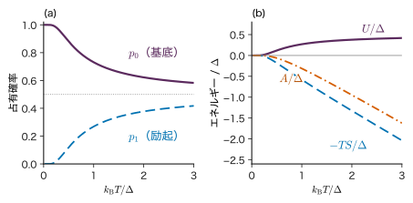
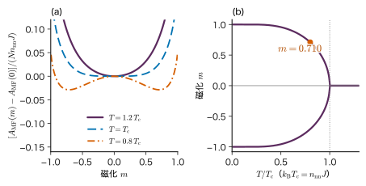
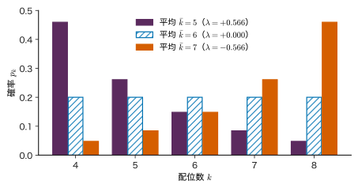
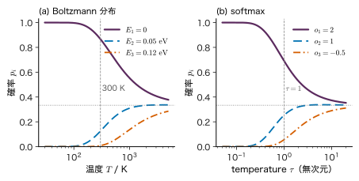
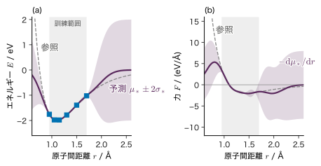
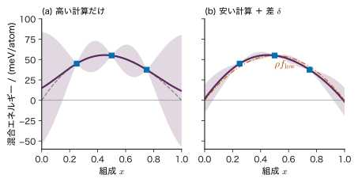

第27章材料科学・統計力学との接点 — 分配関数から機械学習原子間ポテンシャルまで
- softmax は Boltzmann 分布と同じ式である．では，文章を生成するときの temperature は温度なのか．
- 機械学習の「正規化定数」「対数周辺尤度」「変分推論」は，統計力学の「分配関数」「自由エネルギー」「平均場近似」とどこまで同じで，どこから違うのか．
- 第一原理計算のエネルギーと力から学習した原子間ポテンシャルは，どこまで信用してよいのか．
第5章では，エネルギーの平均を固定してエントロピーを最大にするとカノニカル分布 $p_i=e^{-\beta E_i}/Z$ が出ることを見た．第9章の softmax，第19章の Markov 確率場，第20章の ELBO，第21章の Metropolis 法にも，同じ $e^{-(\text{何か})}/Z$ の形が繰り返し現れた．これは偶然ではない．正の値をとる確率分布は，どれも「エネルギー」と「分配関数」の言葉で書き直せるからである．書き直すと，物理で 100 年以上かけて磨かれた計算の道具（自由エネルギー，変分原理，平均場近似，Monte Carlo 法）が機械学習にそのまま持ち込める．逆に，式が同じでも物理の意味まで同じとは限らない．GPT の temperature を 2 倍にしても，何かが温まるわけではない．
本章は，これまでの章に散らばっていた対応を 1 か所に集めて整理する章である．まず対応表を作り（27.1 節），エネルギーベースモデルの学習がなぜ難しいか（27.2 節），周辺化と自由エネルギーの関係（27.3 節），変分自由エネルギーと Ising 模型の平均場近似（27.4 節），最大エントロピー原理の一般形（27.5 節）を順に導く．27.6 節では Boltzmann 重みと softmax の同じ点と違う点を表で比べる．後半は材料科学への応用で，第一原理計算を教師データとする機械学習原子間ポテンシャル（27.7 節）と，少量データ・多忠実度データ・物理的制約の使い方（27.8 節）を扱う．
- 確率モデルと統計力学の対応（エネルギー，分配関数，自由エネルギー，基底状態，平衡のサンプリング）を表にでき，各対応の前提を言える．
- エネルギーベースモデルの対数尤度の勾配が「データの平均 − モデルの平均」になることを導き，分配関数が学習を難しくする理由を説明できる．
- 周辺確率が自由エネルギーの差で書けること，$A[q]=\Ex_q[E]-TS[q]\ge A$ を KL ダイバージェンスから証明し，ELBO と項ごとに対応させられる．
- Ising 模型の平均場近似を変分法で導き，自己無撞着方程式を解ける．
- 複数の平均値を固定した最大エントロピー分布が指数型になることを導ける．
- Boltzmann 分布と softmax の数学的な同一性と物理的な相違を，単位・平衡・時間発展の観点で説明できる．
- 機械学習原子間ポテンシャルの基本仮定（局所性，不変性，力の学習）と，外挿・不確かさ・能動学習の問題を説明できる．
入門ルートで読む節：この章は詳しいルートの章である．入門ルートでは 27.10（まとめ）だけを読み，次の第28章へ進んでよい．
27.1 対応表 — 確率モデルを統計力学の言葉で読む詳しいルート
27.1.1 何をしたいのか
統計力学では，温度 $T$ の熱浴に接した物理系が微視的な状態 $x$（原子の配置，スピンの向きなど）をとる確率を
\begin{equation} \begin{aligned}p(x)&=\frac{e^{-\beta E(x)}}{Z},\\ Z&=\sum_{x}e^{-\beta E(x)},\quad \beta\equiv\frac{1}{k_{\mathrm B}T}\end{aligned} \label{eq:27-boltz} \end{equation}と書く（Boltzmann 分布，カノニカル分布）．$E(x)$ は状態 $x$ のエネルギー（単位 J または eV），$k_{\mathrm B}$ $=8.617\times10^{-5}\ \mathrm{eV\,K^{-1}}$ は Boltzmann 定数，$Z$ は分配関数である．なぜこの形になるかは，熱浴との接触から導く方法（大学基礎物理学 第50章 50.2）と，エネルギーの平均を固定したエントロピー最大化から導く方法（第5章 5.8）がある．Helmholtz の自由エネルギーは $A=-k_{\mathrm B}T\ln Z$ である（$F$ と書く本も多い）．
一方，機械学習で扱う確率分布 $p(x)$ は，物理系とは関係なく決めたものである．それでも，$p(x)\gt0$ がすべての $x$ で成り立つなら，正規化される前の重み $\tilde{p}(x)$（$p(x)=\tilde{p}(x)/Z$）を使って
\begin{equation} \begin{aligned}&E(x)\equiv-\ln\tilde{p}(x)\\ &\Longrightarrow\ p(x)=\frac{e^{-E(x)}}{Z},\\ &\qquad Z=\sum_{x}\tilde{p}(x)\end{aligned} \label{eq:27-energy-def} \end{equation}と書ける．これは式 \eqref{eq:27-boltz} で $\beta=1$ とおいた形であり，$E(x)$ は無次元の「エネルギー」である．つまり，どんな正の分布も Boltzmann 分布の形に書き直せる．書き直しただけでは何も新しくならないが，統計力学で使われてきた量の名前と計算法が，そのまま機械学習の量に当てはまるようになる（図27.1）．
27.1.2 事後分布は Boltzmann 分布の形をしている
第4章のベイズ推定で，パラメーター $\bm{\theta}\in\R^{M}$ の事後分布は $p(\bm{\theta}\mid\data)$ $=p(\data\mid\bm{\theta})\,p(\bm{\theta})/p(\data)$ であった．$\bm{\theta}$ の関数としての「エネルギー」を
\begin{equation} U(\bm{\theta})\equiv-\ln p(\data\mid\bm{\theta})-\ln p(\bm{\theta}) \label{eq:27-post-energy} \end{equation}と定めると，分子は $p(\data\mid\bm{\theta})p(\bm{\theta})$ $=e^{-U(\bm{\theta})}$ であり，分母の周辺尤度（証拠（エビデンス）とも呼ぶ）は
$$ p(\data)=\int p(\data\mid\bm{\theta})\,p(\bm{\theta})\,\dd\bm{\theta}=\int e^{-U(\bm{\theta})}\,\dd\bm{\theta} $$である．したがって
\begin{equation} \begin{aligned}p(\bm{\theta}\mid\data)&=\frac{e^{-U(\bm{\theta})}}{Z},\\ Z=p(\data),&\quad -\ln p(\data)=-\ln Z\end{aligned} \label{eq:27-post-boltz} \end{equation}となる．事後分布は「エネルギー $U$ の Boltzmann 分布（$\beta=1$）」であり，周辺尤度 $p(\data)$ は分配関数，負の対数周辺尤度 $-\ln p(\data)$ は自由エネルギー（に $\beta$ を掛けたもの）に当たる．
具体例として，第8章の Ridge 回帰を見る．Gauss ノイズ $\Normal(y_n\mid\bm{w}^{\tp}\bm{\phi}(\bm{x}_n),\sigma^{2})$ と事前分布 $\Normal(\bm{w}\mid\bm{0},\sigma_w^{2}\bm{I})$（$\bm{w}\in\R^{M}$）のもとで，$\bm{w}$ に依らない定数を除くと
$$ \begin{aligned} U(\bm{w})&=\frac{1}{2\sigma^{2}}\norm{\bm{y}-\bm{\Phi}\bm{w}}^{2}+\frac{1}{2\sigma_w^{2}}\norm{\bm{w}}^{2}+\text{定数}\\ &=\frac{1}{\sigma^{2}}\Bigl[\tfrac12\norm{\bm{y}-\bm{\Phi}\bm{w}}^{2}+\tfrac{\lambda}{2}\norm{\bm{w}}^{2}\Bigr]+\text{定数} \end{aligned} $$（$\lambda=\sigma^{2}/\sigma_w^{2}$，$\bm{\Phi}\in\R^{N\times M}$）．角括弧の中は Ridge の損失 $L(\bm{w})$ そのものである．つまり事後分布は $p(\bm{w}\mid\data)\propto e^{-L(\bm{w})/\sigma^{2}}$ であり，ノイズの分散 $\sigma^{2}$ が温度の役をしている．ノイズが小さいほど（「低温」ほど），事後分布は損失の最小点（MAP 推定値）の近くに集まる．
27.1.3 対応表
本書のこれまでの章で現れた対応を表27.1 にまとめる．右端の列は，その対応を本書のどこで使ったか，または本章のどの節で詳しく扱うかである．
| 機械学習・統計 | 統計力学 | 本書の箇所 |
|---|---|---|
| $-\ln\tilde{p}(x)$（負の対数尤度，損失） | $\beta E(x)$（エネルギー × $\beta$） | 式 \eqref{eq:27-energy-def} |
| 正規化定数 $Z=\sum_x\tilde{p}(x)$ | 分配関数 $Z=\sum_xe^{-\beta E(x)}$ | 第19章 19.5，27.2 節 |
| 周辺尤度 $p(\data)$，負の対数周辺尤度 $-\ln p(\data)$ | 分配関数，$\beta A=-\ln Z$ | 式 \eqref{eq:27-post-boltz} |
| 潜在変数についての周辺化 $\sum_z$ | 部分的な分配関数，自由エネルギーの差 | 27.3 節 |
| 近似分布 $q$ と ELBO | 試行分布と変分自由エネルギー $A[q]$（$\ELBO=-\beta A[q]$） | 第20章 20.8，27.4 節 |
| 平均場近似（変分推論） | 平均場理論 | 27.4 節 |
| 制約付きのエントロピー最大化 → 指数型分布族 | カノニカル分布（エネルギーの平均の制約） | 第5章 5.8，27.5 節 |
| softmax のロジット（logit）$o_i$，temperature $\tau$ | $-E_i$，$k_{\mathrm B}T$ | 第9章 9.5，27.6 節 |
| MAP 推定（損失の最小） | 基底状態（$T\to0$） | 27.1.4 項 |
| 事後分布からのサンプリング（MCMC） | 熱平衡の状態のサンプリング（Metropolis 法） | 第21章 21.11 |
| 確率の対数の 2 階微分（Fisher 情報など） | ゆらぎ（比熱・磁化率） | 27.2 節 |
記号：本章で使う文字
$\beta=1/(k_{\mathrm B}T)$ は統計力学の逆温度であり，第7章の Adam の係数 $\beta_1,\beta_2$ とは別の量である．機械学習の側では $\beta=1$ とおき，エネルギーを無次元で扱う．自由エネルギーは $A$，熱力学のエントロピーは $S$（単位 $\mathrm{J\,K^{-1}}$ または $\mathrm{eV\,K^{-1}}$），Shannon のエントロピーは $H$（nat）で，$S=k_{\mathrm B}H$ の関係にある（第5章 5.8）．27.4 節のスピン $s_i$，外部磁場の項 $h$，交換相互作用 $J$ は第19章 19.5 と同じ記号である（$h$ は活性化関数 $h(\cdot)$ とは別）．27.5 節の未定乗数 $\lambda_k$ は添字つきで書き，正則化係数 $\lambda$ と区別する．
例27.1 一様な事前分布での成功率の周辺尤度
成功率 $\mu\in[0,1]$ に一様な事前分布 $p(\mu)=1$ を置き，3 回中 3 回成功した．$U(\mu)=-\ln\mu^{3}=-3\ln\mu$ なので，分配関数は $Z$ $=\int_0^1e^{-U}\dd\mu$ $=\int_0^1\mu^{3}\dd\mu$ $=1/4$，負の対数周辺尤度は $-\ln Z=\ln4\approx1.386$ である．$U$ が最小の「基底状態」は $\mu=1$（MAP 推定値）だが，事後分布 $4\mu^{3}$ の平均は $4/5$ であり，基底状態だけを見ると幅の情報が失われる．
27.1.4 温度を変える — MAP，事後分布，焼きなまし
式 \eqref{eq:27-post-boltz} に逆温度 $\beta$ を入れ直した分布 $p_\beta(\bm{\theta})\propto e^{-\beta U(\bm{\theta})}$ を考えると，いくつかの手法が 1 本の軸の上に並ぶ．
- $\beta=1$：ベイズの事後分布そのもの．
- $\beta\to\infty$（低温の極限）：$e^{-\beta U}$ は $U$ の最小点以外で相対的に 0 になり，分布は MAP 推定値に集中する．物理では基底状態に当たる．
- $\beta\to0$（高温の極限）：$e^{-\beta U}\to1$ なので，分布は一様に近づく（ただし $\bm{\theta}$ の範囲が有界のとき）．
$\beta$ を少しずつ大きくしながらサンプリングを続け，最後に最小点を見つける方法が焼きなまし法（simulated annealing．Kirkpatrick, Gelatt & Vecchi 1983）である．金属をゆっくり冷やすと欠陥の少ない状態に落ち着くことからの類推で名付けられた．異なる $\beta$ の連鎖を並べて状態を交換するレプリカ交換法とともに，サンプリングの手法は第21章 21.10〜21.11 で扱う．本章ではサンプリングの算法には立ち入らず，何からサンプリングしているのか（$e^{-\beta E}$ の形の分布）を共通の言葉で整理することに集中する．
例題27.1 3 クラスのロジットをエネルギーとして読む
ある分類器が 3 クラスにロジット $\bm{o}=(2.0,\ 1.0,\ -0.5)$ を出した．softmax で確率 $p_i=e^{o_i}/\sum_je^{o_j}$ を作る．(1) $p_i$ を求めよ．(2) $E_i\equiv-o_i$ を「エネルギー」と見て，分配関数 $Z$ と「自由エネルギー」$A=-\ln Z$（$\beta=1$）を求め，$-\ln p_i=E_i-A$ を確かめよ．(3) すべてのロジットに 10 を足すと，$p_i$ と $A$ はどう変わるか．
解答 (1) 重みは $e^{2.0}=7.3891$，$e^{1.0}=2.7183$，$e^{-0.5}=0.6065$．和は $Z=7.3891+2.7183+0.6065=10.7139$．よって $p_1=7.3891/10.7139=0.6897$，$p_2=2.7183/10.7139=0.2537$，$p_3=0.6065/10.7139=0.0566$．
(2) $Z=10.7139$ は (1) の和そのもので，$A=-\ln10.7139=-2.3715$．$-\ln p_1=-\ln0.6897=0.3715$ であり，$E_1-A=-2.0+2.3715=0.3715$ と一致する．同様に $-\ln p_2=1.3715=-1.0+2.3715$，$-\ln p_3=2.8715=0.5+2.3715$．つまり「確率の負の対数は，その状態のエネルギーと自由エネルギーの差」である．
(3) 重みはすべて $e^{10}$ 倍になり，$Z$ も $e^{10}$ 倍になるので，比 $p_i$ は変わらない．一方 $A=-\ln(e^{10}Z)=-10-2.3715=-12.3715$ と 10 だけ下がる．エネルギーの基準（原点）を動かしても確率は変わらず，自由エネルギーは同じだけ動く．物理でエネルギーの原点を自由に選べることと同じである．
27.2 エネルギーベースモデル — 分配関数が学習を難しくする詳しいルート
27.2.1 定義
式 \eqref{eq:27-energy-def} を逆向きに使い，エネルギーの関数を先にモデル化し，確率はその結果として定める方法がある．
定義27.1 エネルギーベースモデル
パラメーター $\bm{\theta}\in\R^{M}$ を持つ実数値の関数 $E_{\bm{\theta}}(x)$（エネルギー関数）を用いて
\begin{equation} \begin{aligned}p_{\bm{\theta}}(x)&=\frac{e^{-E_{\bm{\theta}}(x)}}{Z_{\bm{\theta}}},\\ Z_{\bm{\theta}}&=\sum_{x}e^{-E_{\bm{\theta}}(x)}\end{aligned} \label{eq:27-ebm} \end{equation}と定めた確率モデルをエネルギーベースモデル（energy-based model）という．$x$ が連続なら和を積分に替える（積分が有限であることが必要）．
エネルギー関数は，正規化を気にせずに自由に作れる．ニューラルネットワークでもよい．これが利点である．代償は，確率の値を求めるのにも，学習するのにも，$Z_{\bm{\theta}}$ が必要になることである．$x$ が $n$ 個の二値の変数なら $Z_{\bm{\theta}}$ は $2^{n}$ 項の和で，$n=100$ なら $2^{100}\approx1.3\times10^{30}$ 項になる．
歴史的に重要な例を 2 つ挙げる．
- Hopfield ネットワーク（Hopfield 1982）：$n$ 個の二値のユニット $s_i\in\{+1,-1\}$ にエネルギー $E(\bm{s})$ $=-\tfrac12\sum_{i\ne j}w_{ij}s_is_j-\sum_ib_is_i$（$w_{ij}=w_{ji}$）を与える．ユニットを 1 個ずつ「エネルギーが下がる向き」に更新すると，状態は局所的な最小に落ち着く．記憶させたいパターンが最小になるように $w_{ij}$ を決めると，一部が欠けたパターンから全体を思い出す連想記憶として働く．形は第19章 19.5 の Ising 模型と同じである．
- Boltzmann マシン（Ackley, Hinton & Sejnowski 1985）：同じ形のエネルギーで，状態を決定論的に更新する代わりに，Boltzmann 分布 \eqref{eq:27-ebm} から確率的にサンプリングする．観測しない隠れユニットを加えると，複雑な分布を表せる．隠れユニットどうし・観測ユニットどうしの結合をなくした制限付き Boltzmann マシンは，学習の近似法（contrastive divergence．Hinton 2002）とともに広く使われた．
27.2.2 対数尤度の勾配 — データの平均とモデルの平均
データ $\data=\{x_n\}_{n=1}^{N}$（独立同分布）について，平均の対数尤度 $\ell(\bm{\theta})$ $=\frac1N\sum_n\ln p_{\bm{\theta}}(x_n)$ の勾配を求める．
導出：エネルギーベースモデルの対数尤度の勾配
式 \eqref{eq:27-ebm} の対数をとると $\ln p_{\bm{\theta}}(x)$ $=-E_{\bm{\theta}}(x)-\ln Z_{\bm{\theta}}$．$\bm{\theta}$ で微分すると
$$ \pdiff{}{\bm{\theta}}\ln p_{\bm{\theta}}(x)=-\pdiff{E_{\bm{\theta}}(x)}{\bm{\theta}}-\pdiff{\ln Z_{\bm{\theta}}}{\bm{\theta}} . $$第 2 項を計算する．$\ln$ の微分と，和の微分を項ごとに行うことにより
$$ \begin{aligned} \pdiff{\ln Z_{\bm{\theta}}}{\bm{\theta}} &=\frac{1}{Z_{\bm{\theta}}}\pdiff{Z_{\bm{\theta}}}{\bm{\theta}}\\ &=\frac{1}{Z_{\bm{\theta}}}\sum_{x'}\pdiff{}{\bm{\theta}}e^{-E_{\bm{\theta}}(x')}\\ &=\frac{1}{Z_{\bm{\theta}}}\sum_{x'}\Bigl(-\pdiff{E_{\bm{\theta}}(x')}{\bm{\theta}}\Bigr)e^{-E_{\bm{\theta}}(x')}\\ &=-\sum_{x'}p_{\bm{\theta}}(x')\pdiff{E_{\bm{\theta}}(x')}{\bm{\theta}}\\ &=-\Ex_{p_{\bm{\theta}}}\Bigl[\pdiff{E_{\bm{\theta}}}{\bm{\theta}}\Bigr]. \end{aligned} $$3 行目では $e^{-E_{\bm{\theta}}(x')}/Z_{\bm{\theta}}$ $=p_{\bm{\theta}}(x')$ を使った．これを代入して $n$ について平均すると，次の式を得る．
（導出終わり）
第 1 項は，データ点でのエネルギーを下げる向き（データの所の確率を上げる），第 2 項は，モデルが今確率を置いている所のエネルギーを上げる向き（データの無い所の確率を下げる）に働く．2 つの平均が一致すると勾配は 0 になる．難しいのは第 2 項で，モデルの分布 $p_{\bm{\theta}}$ についての期待値には $Z_{\bm{\theta}}$ が必要である．実際には第21章の MCMC でモデルから標本を引いて近似するが，学習の 1 ステップごとに MCMC を回す必要があり，標本が混ざりきらないと勾配が偏る．Boltzmann マシンの学習が重かった理由はここにある．
27.2.3 エネルギーがパラメーターの 1 次式のとき — モーメントの一致と凸性
特に，特徴量 $\bm{f}(x)\in\R^{M}$ を使ってエネルギーを $E_{\bm{\theta}}(x)$ $=-\bm{\theta}^{\tp}\bm{f}(x)$ と書く場合を考える（$p_{\bm{\theta}}(x)\propto\exp(\bm{\theta}^{\tp}\bm{f}(x))$ は第3章 3.11 の指数型分布族で，$\bm{\theta}$ が自然パラメーター，$\bm{f}$ が十分統計量に当たる）．$\partial E/\partial\bm{\theta}$ $=-\bm{f}(x)$ なので，式 \eqref{eq:27-ebm-grad} は
\begin{equation} \pdiff{\ell}{\bm{\theta}}=\frac1N\sum_{n=1}^{N}\bm{f}(x_n)-\Ex_{p_{\bm{\theta}}}[\bm{f}] \label{eq:27-moment} \end{equation}となる．最尤解では勾配が 0 なので，モデルの特徴量の期待値がデータの平均に一致する（モーメントの一致）．さらに 2 階微分を求める．$\Ex_{p_{\bm{\theta}}}[\bm{f}]$ $=\sum_xp_{\bm{\theta}}(x)\bm{f}(x)$ を $\bm{\theta}^{\tp}$ で微分すると，$\partial p_{\bm{\theta}}(x)/\partial\bm{\theta}^{\tp}$ $=p_{\bm{\theta}}(x)\bigl(\bm{f}(x)-\Ex[\bm{f}]\bigr)^{\tp}$（上の導出と同じ計算）を使って
$$ \begin{aligned}\frac{\partial^{2}\ell}{\partial\bm{\theta}\,\partial\bm{\theta}^{\tp}}&=-\sum_xp_{\bm{\theta}}(x)\,\bm{f}(x)\bigl(\bm{f}(x)-\Ex[\bm{f}]\bigr)^{\tp}\\ &=-\Cov_{p_{\bm{\theta}}}[\bm{f}]\end{aligned} $$となる（$\bm{f}\bm{f}^{\tp}$ の期待値から $\Ex[\bm{f}]\Ex[\bm{f}]^{\tp}$ を引いたものが共分散行列）．共分散行列は半正定値（第2章 2.5）なので，負の対数尤度 $-\ell$ は $\bm{\theta}$ の凸関数であり，局所解の心配がない（第7章 7.4）．
応用：比熱はエネルギーのゆらぎ
同じ計算を統計力学で行う．$\bm{\theta}$ の代わりに $-\beta$，$\bm{f}$ の代わりに $E$ とおくと，$\ln Z(\beta)$ $=\ln\sum_xe^{-\beta E(x)}$ について
$$ -\diff{\ln Z}{\beta}=\Ex[E]\equiv U, $$ $$ \frac{\dd^{2}\ln Z}{\dd\beta^{2}}=\Var[E] $$が成り立つ．$\dd\beta/\dd T$ $=-1/(k_{\mathrm B}T^{2})$ を使うと，比熱は $C$ $=\dd U/\dd T$ $=\Var[E]/(k_{\mathrm B}T^{2})$ となり，エネルギーのゆらぎ（分散）で書ける（大学基礎物理学 第50章 50.5）．機械学習で「対数尤度の曲がり具合が特徴量の分散で決まる」ことと，物理で「応答（比熱・磁化率）がゆらぎで決まる」ことは，同じ式の 2 つの読み方である．
例題27.2 1 パラメーターのエネルギーベースモデルを 1 ステップ学習する
小さな結晶粒の中の空孔の数 $x\in\{0,1,2,3\}$ を 10 個の粒で数え，0 個が 4 粒，1 個が 3 粒，2 個が 2 粒，3 個が 1 粒だった（教育用の合成データ．乱数は使わず，説明のために手で決めた数値である）．モデルを $E_\theta(x)=-\theta x$，すなわち $p_\theta(x)=e^{\theta x}/Z_\theta$ とする．(1) $\theta=0$ での平均の対数尤度 $\ell$ と勾配を求めよ．(2) 学習率 $\eta=0.5$ で勾配上昇を 1 ステップ行い，新しい $\theta$ でのモデルの平均を求めよ．(3) 最尤推定値 $\hat\theta$ が満たす式を書き，数値で解け．
解答 データの値の合計は $0\times4+1\times3+2\times2+3\times1$ $=10$ なので，データの平均は $\bar{x}=10/10=1.0$．
(1) $\ln p_\theta(x)$ $=\theta x-\ln Z_\theta$ なので $\ell(\theta)$ $=\theta\bar{x}-\ln Z_\theta$．$\theta=0$ では 4 状態が等確率で $Z_0=4$，$\ell(0)=-\ln4=-1.3863$．式 \eqref{eq:27-moment} より勾配は $\bar{x}-\Ex_{p_0}[x]$ $=1.0-(0+1+2+3)/4$ $=1.0-1.5$ $=-0.5$．モデルの平均がデータより大きいので，$\theta$ を下げる向きである．
(2) $\theta_1=0+0.5\times(-0.5)=-0.25$．重み $e^{-0.25x}$ は $x=0,1,2,3$ で $1,\ 0.7788,\ 0.6065,\ 0.4724$，和 $Z=2.8577$．確率は $0.3499,\ 0.2725,\ 0.2122,\ 0.1653$，モデルの平均は $0.2725+2\times0.2122+3\times0.1653$ $=1.1929$．データの平均 1.0 に近づいた．$\ell(\theta_1)$ $=-0.25\times1.0-\ln2.8577$ $=-0.25-1.0500$ $=-1.3000$ で，(1) より大きい．
(3) 勾配が 0 の条件は $\Ex_{p_{\hat\theta}}[x]=\bar{x}=1.0$，すなわち
$$ \frac{e^{\hat\theta}+2e^{2\hat\theta}+3e^{3\hat\theta}}{1+e^{\hat\theta}+e^{2\hat\theta}+e^{3\hat\theta}}=1.0 . $$$r=e^{\hat\theta}$ とおき分母を払うと $r+2r^{2}+3r^{3}=1+r+r^{2}+r^{3}$，整理して $2r^{3}+r^{2}-1=0$．$r=0.6573$ が正の実数解で（$2\times0.2840+0.4320-1=0.000$），$\hat\theta=\ln0.6573=-0.4196$．このとき確率は $0.4214,\ 0.2770,\ 0.1820,\ 0.1197$，$\ell(\hat\theta)=-1.2839$ である．この単純な例では $Z$ が 4 項の和なので正確に計算できたが，状態が $2^{100}$ 個あればモデルの平均は MCMC で見積もるしかない．
27.3 推論と自由エネルギー — 周辺化は部分的な分配関数詳しいルート
27.3.1 周辺化と条件付けを分配関数で書く
観測する変数 $x$ と観測しない変数 $z$（潜在変数）の同時分布を，エネルギー $E(x,z)$ を使って $p(x,z)=e^{-E(x,z)}/Z$，$Z=\sum_{x,z}e^{-E(x,z)}$ と書く．$x$ を固定して $z$ だけについて和をとった量
\begin{equation} Z(x)\equiv\sum_{z}e^{-E(x,z)} \label{eq:27-partial-Z} \end{equation}を部分的な分配関数と呼ぶことにする（$\sum_xZ(x)=Z$）．すると周辺分布と条件付き分布は
\begin{equation} \begin{aligned}p(x)&=\sum_zp(x,z)=\frac{Z(x)}{Z},\\ p(z\mid x)&=\frac{p(x,z)}{p(x)}=\frac{e^{-E(x,z)}}{Z(x)}\end{aligned} \label{eq:27-marg} \end{equation}となる．対応する「自由エネルギー」を $A=-\ln Z$，$A(x)=-\ln Z(x)$ と定めると（$\beta=1$），
$$ -\ln p(x)=A(x)-A $$が成り立つ．周辺確率の負の対数は，$x$ を固定した系の自由エネルギーと，固定しない系の自由エネルギーの差である．条件付き分布 $p(z\mid x)$ は，$x$ を固定した「部分系」の Boltzmann 分布であり，その分配関数が $Z(x)$ である．
物理でもこの考え方はよく使われる．たとえば磁性体で，全スピンの平均の磁化が $m$ である微視的状態だけについて和をとった $Z(m)$ を作ると，磁化の分布は $p(m)=Z(m)/Z\propto e^{-\beta A(m)}$ になる．$A(m)$ を $m$ の関数として描いたものが，相転移の議論に使う自由エネルギーの曲線である（27.4 節の図27.3(a) はその平均場近似）．機械学習の「潜在変数を周辺化して観測の尤度を作る」操作（第17章の混合分布，第22章の隠れ Markov モデル）は，物理の「注目しない自由度について和をとって自由エネルギーを作る」操作と同じである．第19章 19.7 のメッセージ伝播（sum-product）は，物理では 1 次元の格子の分配関数を行列の積で計算する転送行列法に当たる．
27.3.2 最も簡単な例 — 2 準位系
エネルギーが $0$ と $\Delta\gt0$ の 2 つの状態だけを持つ系（2 準位系）を考える．結晶中の欠陥が 2 つの配置のどちらかをとる場合や，磁場中の電子スピンがこの例である（大学基礎物理学 第51章 51.3）．分配関数と各量は
\begin{equation} \begin{aligned}Z&=1+e^{-\beta\Delta},\\ p_1&=\frac{e^{-\beta\Delta}}{1+e^{-\beta\Delta}},\\ A&=-k_{\mathrm B}T\ln\bigl(1+e^{-\beta\Delta}\bigr)\end{aligned} \label{eq:27-twolevel} \end{equation}である（$p_1$ は高い準位にいる確率）．エネルギーの平均は $U=\Delta p_1$，エントロピーは $S=(U-A)/T$ で求まる．図27.2 は，これらを $k_{\mathrm B}T/\Delta$ の関数として描いたものである．低温では系は基底状態にいて $A\approx U\approx0$，高温では 2 状態が等確率に近づき，$-TS\to-k_{\mathrm B}T\ln2$ が $A$ を下げる．$A=U-TS$ は「エネルギーを下げたい」と「状態の数を稼ぎたい（エントロピーを上げたい）」の釣り合いを 1 つの数で表した量である．

$U$ は $\ln Z$ の微分から得られた：$U=-\partial\ln Z/\partial\beta$．機械学習でも，$\ln Z_{\bm{\theta}}$ をパラメーターで微分するとモデルの期待値が出た（27.2 節）．分配関数（の対数）が計算できれば，期待値はすべてその微分で得られる．だからこそ，分配関数が計算できないことが統計力学と機械学習に共通の難しさになる．
例題27.3 2 個のスピンの周辺確率を自由エネルギーの差で求める
2 個のスピン $s_1,s_2\in\{+1,-1\}$ のエネルギーを $E=-Js_1s_2-h(s_1+s_2)$ とし，$\beta J=1$，$\beta h=0.5$ とする．(1) 4 状態の重み $e^{-\beta E}$ と $Z$ を求めよ．(2) 部分的な分配関数 $Z(s_1=+1)$，$Z(s_1=-1)$ を求め，周辺確率 $p(s_1=+1)$ と $\beta A(s_1=+1)-\beta A$ を求めよ．(3) $\langle s_1\rangle$（$\Ex[s_1]$）を求め，$\tfrac12\,\partial\ln Z/\partial(\beta h)$ と一致することを確かめよ．(4) $p(s_2=+1\mid s_1=+1)$ と $p(s_2=+1\mid s_1=-1)$ を求め，2 つのスピンが独立でないことを示せ．
解答 (1) $-\beta E$ $=\beta Js_1s_2+\beta h(s_1+s_2)$ なので
$$ \begin{aligned} (+,+)&:\ e^{1+1}=e^{2}=7.3891,\\ (+,-),(-,+)&:\ e^{-1+0}=0.3679,\\ (-,-)&:\ e^{1-1}=e^{0}=1 . \end{aligned} $$$Z=7.3891+2\times0.3679+1=9.1248$．
(2) $Z(s_1=+1)=7.3891+0.3679=7.7569$，$Z(s_1=-1)=0.3679+1=1.3679$（和は $Z$ に一致）．$p(s_1=+1)=7.7569/9.1248=0.8501$．$\beta A(s_1$ $=+1)-\beta A$ $=-\ln7.7569+\ln9.1248$ $=-2.0486+2.2110$ $=0.1624$ で，$-\ln0.8501=0.1624$ と一致する．
(3) $\langle s_1\rangle$ $=(+1)\times0.8501+(-1)\times(1.3679/9.1248)$ $=0.8501-0.1499$ $=0.7002$．一方，$\ln Z$ を $\beta h$ で微分すると，各項の指数の $\beta h(s_1+s_2)$ から $(s_1+s_2)$ が下りて $\partial\ln Z/\partial(\beta h)$ $=\langle s_1+s_2\rangle$ $=2\langle s_1\rangle$（対称性より $\langle s_1\rangle$ $=\langle s_2\rangle$）．よって $\tfrac12\,\partial\ln Z/\partial(\beta h)$ $=0.7002$ で一致する．
(4) 式 \eqref{eq:27-marg} より，$s_1=+1$ のもとでは $p(s_2=+1\mid s_1=+1)$ $=7.3891/7.7569=0.9526$，$s_1=-1$ のもとでは $p(s_2=+1\mid s_1=-1)$ $=0.3679/1.3679=0.2689$．条件によって値が大きく違うので，$s_1$ と $s_2$ は独立でない（強磁性の結合 $J\gt0$ のため，そろいやすい）．
27.4 変分自由エネルギーと変分推論 — 平均場近似詳しいルート
27.4.1 Gibbs–Bogoliubov の不等式
分配関数が計算できないとき，統計力学では「計算できる分布 $q$ で近似し，その中で一番よいものを選ぶ」という変分法を使う．その基礎が次の不等式である（第20章 20.8 でも導いた．ここでは本章の記号で証明を再掲し，Ising 模型の平均場近似へ進む）．
定義27.2 変分自由エネルギー
状態 $x$ の上の任意の確率分布 $q(x)$ について
\begin{equation} \begin{aligned}A[q]&\equiv\Ex_q[E]-TS[q],\\ S[q]&=-k_{\mathrm B}\,\Ex_q[\ln q]\end{aligned} \label{eq:27-varfree} \end{equation}を $q$ の変分自由エネルギーという（$S[q]=-k_{\mathrm B}\sum_xq(x)\ln q(x)$ は $q$ の Gibbs のエントロピー）．$q$ が Boltzmann 分布 $p$（式 \eqref{eq:27-boltz}）に等しいとき，$A[p]$ は通常の自由エネルギー $A=-k_{\mathrm B}T\ln Z$ に一致する．
定理27.1 Gibbs–Bogoliubov の不等式（変分原理）
任意の分布 $q$ について $A[q]\ge A$ が成り立ち，等号は $q=p$ のときに限る．差は KL ダイバージェンスで $A[q]-A$ $=k_{\mathrm B}T\,\KL(q\,\|\,p)$ と書ける．
証明
KL の定義（第5章 5.4）から始める．
$$ \begin{aligned}\KL(q\,\|\,p)&=\sum_xq(x)\ln q(x)\\ &\quad-\sum_xq(x)\ln p(x).\end{aligned} $$第 1 項は $S[q]$ の定義から $-S[q]/k_{\mathrm B}$ である．第 2 項には $\ln p(x)=-\beta E(x)-\ln Z$ を代入し，$\sum_xq(x)=1$ を使う．
$$ \begin{aligned} -\sum_xq(x)\ln p(x)&=\sum_xq(x)\bigl(\beta E(x)\\ &\qquad\qquad+\ln Z\bigr)\\ &=\beta\,\Ex_q[E]+\ln Z . \end{aligned} $$よって $\KL(q\,\|\,p)$ $=-S[q]/k_{\mathrm B}+\beta\,\Ex_q[E]+\ln Z$．両辺に $k_{\mathrm B}T=1/\beta$ を掛けると
$$ \begin{aligned} k_{\mathrm B}T\,\KL(q\,\|\,p)&=\Ex_q[E]-TS[q]\\ &\quad+k_{\mathrm B}T\ln Z\\ &=A[q]-A . \end{aligned} $$最後の行で $A=-k_{\mathrm B}T\ln Z$ を使った．$\KL\ge0$ で，等号は $q=p$ のときに限る（第5章 5.4）ので，定理が成り立つ．
（証明終わり）
この不等式から，近似の方針がすぐに立つ．計算しやすい分布の族 $\mathcal{Q}$ の中で $A[q]$ を最小にすれば，それは $\KL(q\,\|\,p)$ を最小にする $q$ であり，最小値 $A[q^{*}]$ は真の $A$ の上界になる．
27.4.2 ELBO との対応
第20章の変分推論は，事後分布 $p(\bm{\theta}\mid\data)$ を $q(\bm{\theta})$ で近似し，ELBO を最大にした．27.1.2 項の対応（$\beta=1$，エネルギー $U(\bm{\theta})$ $=-\ln p(\data,\bm{\theta})$，$Z=p(\data)$）を当てはめると，次の表のとおり項ごとに一致する．
| 変分推論（第20章） | 統計力学 |
|---|---|
| 同時分布 $p(\data,\bm{\theta})$ | Boltzmann 重み $e^{-U(\bm{\theta})}$ |
| 周辺尤度 $p(\data)$ | 分配関数 $Z$ |
| $-\ln p(\data)$ | 自由エネルギー $A$ |
| $\Ex_q[\ln p(\data,\bm{\theta})]$ | $-\Ex_q[U]$（エネルギーの期待値の符号違い） |
| $-\Ex_q[\ln q]=H[q]$ | $S[q]/k_{\mathrm B}$（エントロピー） |
| $\ELBO(q)$ $=\Ex_q[\ln p(\data,\bm{\theta})]+H[q]$ | $-A[q]=-(\Ex_q[U]-H[q])$ |
| $\ln p(\data)$ $=\ELBO(q)+\KL(q\,\|\,p(\bm{\theta}\mid\data))$ | $A[q]=A+\KL(q\,\|\,p)$ |
| ELBO を最大にする | 変分自由エネルギーを最小にする |
$\beta$ を残した書き方では $\ELBO=-\beta A[q]$ である（第20章 20.8）．ELBO の「当てはまり＋エントロピー」という 2 項の形は，自由エネルギーの「エネルギー − 温度 × エントロピー」の形をそのまま写したものである．
27.4.3 Ising 模型の平均場近似を変分法で導く
$N$ 個のスピン $s_i\in\{+1,-1\}$ が格子に並び，各スピンは $n_{\mathrm{nn}}$ 個の最近接のスピンと相互作用するとする（正方格子なら $n_{\mathrm{nn}}=4$，単純立方格子なら 6）．エネルギーは
$$ E(\bm{s})=-J\sum_{\langle ij\rangle}s_is_j-h\sum_{i=1}^{N}s_i $$で，$\langle ij\rangle$ は最近接の対（$Nn_{\mathrm{nn}}/2$ 組）についての和，$J\gt0$（単位 eV）は交換相互作用，$h$（単位 eV）は外部磁場の効果である（第19章 19.5 と同じ）．$2^{N}$ 項の分配関数は，1 次元と 2 次元の $h=0$ などの特別な場合を除いて厳密には計算できない．
試行分布として，スピンが互いに独立な分布（平均場近似．第20章 20.5 と同じ形）を選ぶ．
$$ q(\bm{s})=\prod_{i=1}^{N}q_i(s_i),\qquad q_i(s_i=\pm1)=\frac{1\pm m}{2} $$$m\in[-1,1]$ は各スピンの平均 $\Ex_q[s_i]=m$（磁化）で，すべての格子点で同じとした．変分自由エネルギー \eqref{eq:27-varfree} の 2 つの項を計算する．
- エネルギーの期待値：$q$ のもとで $s_i$ と $s_j$ は独立なので $\Ex_q[s_is_j]$ $=\Ex_q[s_i]\Ex_q[s_j]$ $=m^{2}$．対は $Nn_{\mathrm{nn}}/2$ 組あるので $\Ex_q[E]$ $=-J\,\dfrac{Nn_{\mathrm{nn}}}{2}m^{2}-hNm$．
- エントロピー：独立な分布のエントロピーは各スピンのエントロピーの和なので $S[q]=-Nk_{\mathrm B}\,\varphi(m)$．ここで $\varphi(m)\equiv\dfrac{1+m}{2}\ln\dfrac{1+m}{2}+\dfrac{1-m}{2}\ln\dfrac{1-m}{2}$．
よって 1 スピンあたりの変分自由エネルギーは
\begin{equation} \begin{aligned}\frac{A_{\mathrm{MF}}(m)}{N}&=-\frac{Jn_{\mathrm{nn}}}{2}m^{2}-hm\\ &\quad+k_{\mathrm B}T\,\varphi(m)\end{aligned} \label{eq:27-mf-A} \end{equation}である．これを $m$ について最小にする．$\varphi$ の微分は
$$ \begin{aligned} \varphi'(m)&=\tfrac12\ln\tfrac{1+m}{2}+\tfrac12-\tfrac12\ln\tfrac{1-m}{2}-\tfrac12\\ &=\tfrac12\ln\frac{1+m}{1-m}=\operatorname{artanh}m \end{aligned} $$なので，$m$ による微分 $\dd(A_{\mathrm{MF}}/N)/\dd m$ を 0 とおいた式 $-Jn_{\mathrm{nn}}m-h+k_{\mathrm B}T\operatorname{artanh}m$ $=0$ から $\operatorname{artanh}m$ $=\beta(Jn_{\mathrm{nn}}m+h)$，すなわち
\begin{equation} m=\tanh\bigl[\beta\,(Jn_{\mathrm{nn}}m+h)\bigr] \label{eq:27-mf-sc} \end{equation}を得る．これが平均場近似の自己無撞着方程式である．右辺の $Jn_{\mathrm{nn}}m+h$ は「周りのスピンの平均が作る有効な磁場」で，1 個のスピンがこの有効磁場の中で示す磁化 $\tanh(\beta\times\text{有効磁場})$ が，最初に仮定した $m$ と一致することを要求している．
$h=0$ のとき，$m=0$ はつねに解である．$A_{\mathrm{MF}}$ を $m=0$ の周りで展開する．$\varphi(m)$ $=-\ln2+\tfrac12m^{2}+\tfrac{1}{12}m^{4}+\cdots$（$\ln(1\pm m)$ の Taylor 展開から）を代入すると
$$ \begin{aligned}\frac{A_{\mathrm{MF}}(m)}{N}&=-k_{\mathrm B}T\ln2+\frac{k_{\mathrm B}T-Jn_{\mathrm{nn}}}{2}m^{2}\\ &\quad+\frac{k_{\mathrm B}T}{12}m^{4}+\cdots\end{aligned} $$となる．$m^{2}$ の係数は $k_{\mathrm B}T\gt Jn_{\mathrm{nn}}$ なら正（$m=0$ が最小），$k_{\mathrm B}T\lt Jn_{\mathrm{nn}}$ なら負（$m=0$ は極大になり，$m\ne0$ の 2 つの最小が現れる）．したがって平均場近似の転移温度は $k_{\mathrm B}T_{\mathrm c}$ $=Jn_{\mathrm{nn}}$ である（図27.3）．

なぜ平均場近似は「対称性を破る」のか
$h=0$ の Ising 模型の Boltzmann 分布は，全スピンを反転しても変わらないので，厳密には $\Ex[s_i]=0$ である．ところが平均場近似は $T\lt T_{\mathrm c}$ で $m\ne0$ を選ぶ．これは，最小にしているのが $\KL(q\,\|\,p)$ であることの結果である．真の分布は「ほぼ全部が上向き」と「ほぼ全部が下向き」の 2 つの峰を持ち，独立なスピンの積 $q$ では両方の峰を同時に覆えない．$\KL(q\,\|\,p)$ は $p$ が小さい所に $q$ が確率を置くことを強く嫌うので，$q$ は片方の峰に寄る（第5章 5.6，第20章 20.7 の「寄る近似」）．無限に大きな系では実際に片方の峰にとどまる（自発磁化）ので，物理ではこの振る舞いが現実に合う．機械学習では，同じ性質が「多峰の事後分布の一つの峰しか見ない」という欠点になる．
例題27.4 2 個のスピンで平均場近似と厳密解を比べる
2 個のスピンのエネルギーを $E=-Js_1s_2$（$h=0$）とし，$\beta J=1.5$ とする（各スピンの最近接は 1 個，$n_{\mathrm{nn}}=1$）．(1) 厳密な $\beta A=-\ln Z$ を求めよ．(2) 平均場近似の自己無撞着方程式 $m=\tanh(\beta Jm)$ の正の解を求めよ．(3) その $m$ での $\beta A_{\mathrm{MF}}$ を求め，$\beta A_{\mathrm{MF}}\ge\beta A$ と，差が $\KL(q\,\|\,p)$ に等しいことを確かめよ．(4) 厳密な $\langle s_1\rangle$，$\langle s_1s_2\rangle$ と，平均場近似の値を比べよ．
解答 (1) そろった 2 状態の重みは $e^{\beta J}$，逆向きの 2 状態は $e^{-\beta J}$ なので $Z$ $=2e^{1.5}+2e^{-1.5}$ $=2\times4.4817+2\times0.2231$ $=9.4096$，$\beta A=-\ln9.4096=-2.2417$．
(2) $g(m)=m-\tanh(1.5m)$ の零点を探す．$m=0.8$：$\tanh1.2=0.8337$，$g=-0.034$．$m=0.9$：$\tanh1.35=0.8741$，$g=0.026$．間を詰めて $m=0.8586$（$\tanh(1.2879)=0.8586$）．
(3) 対は 1 組なので $\beta\Ex_q[E]=-\beta Jm^{2}$ $=-1.5\times0.7371=-1.1057$．エントロピーの項は $2\varphi(m)$ で，$\tfrac{1+m}{2}=0.9293$，$\tfrac{1-m}{2}=0.0707$ から $\varphi$ $=0.9293\ln0.9293+0.0707\ln0.0707$ $=-0.0681-0.1874$ $=-0.2555$．よって $\beta A_{\mathrm{MF}}$ $=-1.1057+2\times(-0.2555)=-1.6167$．$-1.6167\ge-2.2417$ で不等式が成り立ち，差は $0.6251$ である．直接計算すると，$q(+,+)=0.9293^{2}=0.8636$ などから $\KL(q\,\|\,p)=0.6251$ となり一致する．
(4) 厳密には対称性から $\langle s_1\rangle=0$，また $\langle s_1s_2\rangle$ $=(2e^{1.5}-2e^{-1.5})/Z$ $=\tanh1.5=0.9051$．平均場近似は $\langle s_1\rangle=m=0.8586$，$\langle s_1s_2\rangle=m^{2}=0.7371$．平均場近似は，片方の峰（$+,+$）に寄って磁化を作り出し，一方でスピンどうしの相関は過小評価する．$q(+,+)=0.8636$ に対し真の $p(+,+)=e^{1.5}/Z=0.4763$ である．
平均場近似の精度は，相互作用する相手の数で大きく変わる．$n_{\mathrm{nn}}$ が大きいほど，1 個のスピンが感じる有効磁場は多数のスピンの平均になり，ゆらぎが平均されて近似がよくなる．逆に 1 次元の鎖（$n_{\mathrm{nn}}=2$）では，厳密解に有限温度の相転移は無いのに，平均場近似は $k_{\mathrm B}T_{\mathrm c}=2J$ で相転移を予言してしまう．2 次元の正方格子では厳密解（Onsager 1944）の転移温度が $k_{\mathrm B}T_{\mathrm c}$ $=2J/\ln(1+\sqrt2)\approx2.269J$ であるのに対し，平均場近似は $k_{\mathrm B}T_{\mathrm c}=Jn_{\mathrm{nn}}$ で $n_{\mathrm{nn}}=4$ とおいた $4J$ で，$4/2.269\approx1.76$ 倍の過大評価になる．平均場近似は相関（ゆらぎ）を無視するので，秩序を実際より安定に見積もる傾向がある．
27.5 最大エントロピー原理 — 平均値の制約から指数型分布へ詳しいルート
27.5.1 問題の設定
第5章 5.8 では，「エネルギーの平均が $\bar{E}$」という 1 つの制約のもとでエントロピーを最大にすると，カノニカル分布 $p_i\propto e^{-\beta E_i}$ が出ることを示した．ここではそれを一般化する．分かっているのがいくつかの量の平均値だけで，それ以外は何も仮定したくないとき，どの分布を使うのがよいか．Jaynes (1957) は，この問いに「制約を満たす分布のうち，エントロピーが最大のものを使う」と答え，統計力学をこの原理から組み立て直した．
状態 $x$（離散．有限個とする）の上の分布 $p(x)$ について，関数 $f_1(x),\dots,f_K(x)$ の平均値 $c_1,\dots,c_K$ が分かっているとする．
$$ \sum_xp(x)=1, $$ $$ \sum_xp(x)f_k(x)=c_k\quad(k=1,\dots,K). $$この制約のもとで $H[p]=-\sum_xp(x)\ln p(x)$ を最大にする．
定理27.2 最大エントロピー分布は指数型
上の制約のもとでエントロピーを最大にする分布は，ある実数 $\lambda_1,\dots,\lambda_K$ を用いて，囲みのすぐ下の式 \eqref{eq:27-maxent} の形に書ける．$\bm{\lambda}$ $=(\lambda_1,\dots,\lambda_K)^{\tp}$ は制約 $\Ex_p[f_k]=c_k$ から決まり，$\partial\ln Z/\partial\lambda_k$ $=-\Ex_p[f_k]$ が成り立つ．
導出
Lagrange の未定乗数法（第5章 5.8 の囲み，第7章 7.7）を使う．和の制約の乗数を $\lambda_0$，平均値の制約の乗数を $\lambda_k$ として
$$ \begin{aligned} \Lambda&=-\sum_xp(x)\ln p(x)-\lambda_0\Bigl(\sum_xp(x)-1\Bigr)\\ &\quad-\sum_{k=1}^{K}\lambda_k\Bigl(\sum_xp(x)f_k(x)-c_k\Bigr) \end{aligned} $$を作る．ある状態 $x$ の確率 $p(x)$ で偏微分すると，$\partial\bigl(p\ln p\bigr)/\partial p$ $=\ln p+1$ なので
$$ \begin{aligned}\pdiff{\Lambda}{p(x)}&=-\ln p(x)-1-\lambda_0\\ &\quad-\sum_{k}\lambda_kf_k(x)=0 .\end{aligned} $$$p(x)$ について解くと $p(x)$ $=e^{-1-\lambda_0}\exp\bigl(-\sum_k\lambda_kf_k(x)\bigr)$．係数 $e^{-1-\lambda_0}$ は $x$ によらないので，和の制約から $e^{-1-\lambda_0}=1/Z(\bm{\lambda})$ と決まり，式 \eqref{eq:27-maxent} を得る．
次に $\ln Z$ を $\lambda_k$ で微分すると，27.2 節の計算と同じく
$$ \begin{aligned}\pdiff{\ln Z}{\lambda_k}&=\frac{1}{Z}\sum_x\bigl(-f_k(x)\bigr)e^{-\sum_j\lambda_jf_j(x)}\\ &=-\Ex_p[f_k].\end{aligned} $$これが $-c_k$ に等しくなるように $\bm{\lambda}$ を選ぶ．
最後に，これが本当に最大であることを確かめる．同じ制約を満たす任意の分布 $q$ について，$\ln p(x)$ $=-\sum_k\lambda_kf_k(x)-\ln Z$ を使うと
$$ \begin{aligned} \KL(q\,\|\,p)&=-H[q]-\sum_xq(x)\ln p(x)\\ &=-H[q]+\sum_k\lambda_kc_k+\ln Z . \end{aligned} $$$q=p$ では左辺が 0 なので $H[p]=\sum_k\lambda_kc_k+\ln Z$．したがって $\KL(q\,\|\,p)=H[p]-H[q]\ge0$，すなわち $H[q]\le H[p]$ で，等号は $q=p$ のときに限る．
（導出終わり）
$K=1$，$f_1=E$，$\lambda_1=\beta$ とおくと第5章 5.8 のカノニカル分布に戻る．$f$ として粒子数 $N$ も加えると（制約が $\Ex[E]$ と $\Ex[N]$），$p\propto e^{-\beta(E-\mu_{\mathrm c}N)}$ のグランドカノニカル分布になる（$\mu_{\mathrm c}$ は化学ポテンシャル．大学基礎物理学 第52章 52.2）．式 \eqref{eq:27-maxent} は第3章 3.11 の指数型分布族 $h(x)g(\bm{\eta})\exp(\bm{\eta}^{\tp}\bm{u}(x))$ で $\bm{\eta}=-\bm{\lambda}$，$\bm{u}=\bm{f}$，$h=1$ とおいたものである．
27.5.2 連続変数 — 平均と分散を固定すると Gauss 分布
連続変数 $x\in\R$ では，和を積分に，$H$ を微分エントロピー $-\int p\ln p\,\dd x$ に替えて同じ計算ができる（変分法になるが，各点の $p(x)$ を独立な変数と見て微分すれば上と同じ式になる）．平均と 2 乗の平均を固定する．
$$ \int p(x)\,x\,\dd x=\mu,\qquad \int p(x)\,x^{2}\,\dd x=\mu^{2}+\sigma^{2}. $$$f_1=x$，$f_2=x^{2}$ なので，最大エントロピー分布は $p(x)\propto\exp(-\lambda_1x-\lambda_2x^{2})$ である．積分が有限になるには $\lambda_2\gt0$ が必要で，指数の中を平方完成すると
$$ -\lambda_1x-\lambda_2x^{2}=-\lambda_2\Bigl(x+\frac{\lambda_1}{2\lambda_2}\Bigr)^{2}+\frac{\lambda_1^{2}}{4\lambda_2}. $$これは平均 $-\lambda_1/(2\lambda_2)$，分散 $1/(2\lambda_2)$ の Gauss 分布である．制約と比べて $\lambda_2=1/(2\sigma^{2})$，$\lambda_1=-\mu/\sigma^{2}$ と決まり，$p(x)=\Normal(x\mid\mu,\sigma^{2})$ を得る．つまり，平均と分散しか知らないときに最も仮定の少ない分布は Gauss 分布である．測定誤差のモデルに Gauss 分布を使うことの一つの理由づけになる．同様に，$x\ge0$ で平均だけを固定すると指数分布（演習27.5），有限区間で正規化だけを課すと一様分布になる．
27.5.3 最大エントロピーと最尤推定は同じ問題の表と裏
制約の値 $c_k$ に，データから計算した平均 $\frac1N\sum_nf_k(x_n)$ を使ったとする．このときの最大エントロピー分布は，指数型分布族 $p_{\bm{\theta}}(x)\propto\exp(\bm{\theta}^{\tp}\bm{f}(x))$ の最尤推定の解と一致する．最尤推定の条件（式 \eqref{eq:27-moment}）は「モデルの $\Ex[\bm{f}]$ がデータの平均に一致する」であり，これは最大エントロピーの制約そのものだからである（$\bm{\theta}=-\bm{\lambda}$）．したがって，「どの特徴量の平均を合わせるか」を決めることが，「どの指数型モデルを使うか」を決めることと同じになる．
応用：平均の配位数だけが分かっているときの配位数の分布
非晶質（アモルファス）の酸化物や金属ガラスでは，原子の周りの最近接原子の数（配位数）$k$ が原子ごとにばらつく．X 線や中性子の回折から得た動径分布関数を積分すると，平均の配位数 $\bar{k}$ は見積もれるが，配位数の分布そのものは直接は分からない．$k\in\{4,5,6,7,8\}$ と仮定し，平均だけを制約にした最大エントロピー分布は $p_k\propto e^{-\lambda k}$ である（図27.4）．$\bar{k}=6$（取りうる値の中央）なら $\lambda=0$ で一様分布，$\bar{k}=5$ なら $\lambda=0.566$ で 4 配位が最も多い単調な分布になる．ただし，これは「平均以外の情報が無い」ときの最も控えめな推定であり，実際の配位数の分布の形（たとえば 6 配位の所に峰を持つ）を予言するものではない．分散など別の情報が加われば，それを制約に加えて分布を作り直す．

例題27.5 3 状態の最大エントロピー分布を手で解く
ある酸化物で，陽イオン 1 個に隣接する酸素空孔の数 $k$ が 0，1，2 のいずれかであり，その平均が $0.5$ と分かっている（教育用の設定）．(1) 平均だけを制約とした最大エントロピー分布 $p_k$ を求めよ．(2) $\lambda$ と $Z$ を求め，$H[p]=\lambda\bar{k}+\ln Z$ を確かめよ．(3) 制約のない場合（一様分布）とエントロピーを比べよ．
解答 (1) 定理27.2 より $p_k=r^{k}/Z$，$r\equiv e^{-\lambda}$，$Z=1+r+r^{2}$．平均の制約は
$$ \frac{0\cdot1+1\cdot r+2r^{2}}{1+r+r^{2}}=0.5 . $$分母を払うと $r+2r^{2}=0.5+0.5r+0.5r^{2}$，整理して $1.5r^{2}+0.5r-0.5=0$，2 倍して $3r^{2}+r-1=0$．正の解は
$$ \begin{aligned}r&=\frac{-1+\sqrt{1+12}}{6}=\frac{-1+\sqrt{13}}{6}\\ &=\frac{2.6056}{6}=0.4343 .\end{aligned} $$$Z=1+0.4343+0.1886=1.6228$ なので $p_0=1/1.6228=0.6162$，$p_1=0.4343/1.6228=0.2676$，$p_2=0.1886/1.6228=0.1162$．確かめ：$0.2676+2\times0.1162=0.5000$．
(2) $\lambda=-\ln r=-\ln0.4343=0.8341$，$Z=1.6228$．$H[p]$ $=-(0.6162\ln0.6162$ $+0.2676\ln0.2676$ $+0.1162\ln0.1162)$ $=0.2984+0.3527+0.2501$ $=0.9012\ \mathrm{nat}$．一方 $\lambda\bar{k}+\ln Z$ $=0.8341\times0.5+\ln1.6228$ $=0.4171+0.4842$ $=0.9012$ で一致する．
(3) 一様分布のエントロピーは $\ln3=1.0986\ \mathrm{nat}$．平均を知ったことで，エントロピーは $1.0986-0.9012=0.1974\ \mathrm{nat}$ だけ下がった．これは「平均値という情報」が分布の不確かさを減らした量である．
27.6 Boltzmann 重みと softmax — 同じ式，違うもの詳しいルート
27.6.1 数学的には同じ形
第9章 9.5 の softmax と，第26章で文章を生成するときの temperature つきの softmax は
\begin{equation} p_i=\frac{\exp(o_i/\tau)}{\sum_{j}\exp(o_j/\tau)} \label{eq:27-softmax-tau} \end{equation}である．$o_i$ はロジット（無次元の実数），$\tau\gt0$ は temperature（無次元）．これは式 \eqref{eq:27-boltz} で $E_i\leftrightarrow-o_i$，$k_{\mathrm B}T\leftrightarrow\tau$ と置き換えたものとまったく同じ式である．したがって，数学的な性質はすべて共通である．
- 基準の自由：すべての $o_i$ に同じ定数を足しても $p_i$ は変わらない（エネルギーの原点を自由に選べることと同じ．例題27.1 (3)）．数値計算で $\max_jo_j$ を引いてから指数をとる（log-sum-exp）のはこの性質を使っている．
- 低温・高温の極限：$\tau\to0$ で $o_i$ が最大の 1 つに確率が集中し（greedy，基底状態），$\tau\to\infty$ で一様分布に近づく（高温）．
- エントロピーの単調性：$\tau$（$T$）を上げると分布のエントロピーは増える．
図27.5 は，3 準位の Boltzmann 分布の温度依存性と，3 個のロジットの softmax の temperature 依存性を並べたものである．曲線の形はよく似ている．

27.6.2 物理的には違うもの
式が同じでも，量の意味は違う．表27.3 にまとめる．
| 項目 | Boltzmann 分布 | softmax（生成時の temperature） |
|---|---|---|
| 指数の中身 | 状態のエネルギー $E_i$（J，eV．物理法則で決まり，測れる） | ロジット $o_i$（単位がない．学習で決まったネットワークの出力） |
| 温度 | 熱浴の温度 $T$（K．温度計で測れる） | $\tau$（無次元．分布の鋭さを変えるために人が選ぶ数） |
| 温度に特別な値はあるか | 無い（どの $T$ も物理的に実現できる） | $\tau=1$ が学習した分布そのもの．それ以外は学習していない分布 |
| なぜこの形か | 熱浴との平衡，または保存量（エネルギー）の平均を制約にした最大エントロピー | 確率の和を 1 にする便利な関数として選んだ（交差エントロピーと組み合わせると勾配が簡単になる．第9章 9.5） |
| 状態の集合 | 系の微視的な状態すべて | 次のトークンの候補（語彙）．入力ごとにロジットが変わる条件付き分布 $p(y\mid\bm{x})$ |
| 時間発展・平衡 | 系は状態の間を行き来し，時間平均が分布の平均に一致する（平衡） | 行き来する系はない．詳細釣り合いも緩和時間も意味を持たない |
| $-\tau\ln Z$ の意味 | 自由エネルギー（測定できる熱力学量） | 熱力学的な意味はない（log-sum-exp という計算上の量） |
特に重要なのは 3 行目である．物理の温度は，どの値も同じ資格で実在する．一方，GPT の学習は $\tau=1$ の分布で交差エントロピーを最小にしている（第26章）．$\tau\ne1$ の分布は，学習のどこにも現れなかった分布であり，「高温の GPT」が別の熱平衡状態にあるわけではない．$\tau$ を下げると確率の高い候補が選ばれやすくなるという効果は似ているが，その分布が何かの意味で「正しい」という保証はない．
発展：分類器を「エネルギーベースモデル」として読む
ロジットから入力 $\bm{x}$ についての量 $-\ln\sum_je^{o_j(\bm{x})}$ を作ると，これを $\bm{x}$ の「エネルギー」と見ることができる．このように分類器を入力の分布のエネルギーベースモデルとしても使う研究がある（Grathwohl et al. 2020．エネルギーを $E(\bm{x})=-\ln\sum_je^{o_j(\bm{x})}$ とおく）．ただしその場合も，エネルギーは学習で決まった無次元の量であり，物理的なエネルギーではない．統計力学の言葉を使うことは計算の道具を借りることであり，物理の意味を借りることではない．
例題27.6 temperature を変えた softmax と，ロジットの「エネルギーへの換算」
次のトークンの候補 3 個にロジット $\bm{o}=(3.0,\ 2.0,\ 0.5)$ が出た．(1) $\tau=0.5,\ 1,\ 2$ の確率を求めよ．(2) (1) の $\tau=1$ の結果が例題27.1 (1) と一致する理由を述べよ．(3) このロジットを「温度 300 K の Boltzmann 分布のエネルギー」と見なすと，1 位と 2 位のエネルギー差は何 eV になるか．1000 K と見なすとどうか．この結果から何が言えるか．
解答 (1) $\tau=0.5$ では指数の中が $(6,\ 4,\ 1)$ で，重み $403.43,\ 54.60,\ 2.72$，和 $460.75$ から $(0.8756,\ 0.1185,\ 0.0059)$．$\tau=1$ では重み $20.086,\ 7.389,\ 1.649$，和 $29.124$ から $(0.6897,\ 0.2537,\ 0.0566)$．$\tau=2$ では指数の中が $(1.5,\ 1.0,\ 0.25)$ で，重み $4.4817,\ 2.7183,\ 1.2840$，和 $8.4840$ から $(0.5283,\ 0.3204,\ 0.1513)$．
(2) $(3.0,\ 2.0,\ 0.5)$ は例題27.1 の $(2.0,\ 1.0,\ -0.5)$ のすべてに 1.0 を足したものである．基準の自由により，確率は同じになる．
(3) $o_i=-E_i/(k_{\mathrm B}T)$ と見なすと，$E_2-E_1$ $=k_{\mathrm B}T\,(o_1-o_2)$ $=k_{\mathrm B}T\times1.0$．300 K では $k_{\mathrm B}T$ $=8.617\times10^{-5}\times300$ $=0.0259\ \mathrm{eV}$，1000 K では $0.0862\ \mathrm{eV}$ になる．同じロジットが，仮定した温度によって 3 倍以上違うエネルギーに「換算」されてしまう．ロジットは，温度とエネルギーの比しか決めない量であり，それだけからエネルギーの値は決まらない．物理の Boltzmann 分布では $E_i$ と $T$ が別々に測れるので，この曖昧さはない．
参考のため，図27.5(a) の 3 準位系を 300 K で計算すると，占有確率は $(0.866,\ 0.125,\ 0.008)$，1000 K では $(0.553,\ 0.310,\ 0.137)$ である．$0.05\ \mathrm{eV}$ の差は，室温の $k_{\mathrm B}T\approx0.026\ \mathrm{eV}$ の約 2 倍なので，室温でも 1 割程度は 2 番目の準位にいる．材料の計算でエネルギーの誤差を議論するときは，この $k_{\mathrm B}T$ が物差しになる（27.9 節）．
27.7 材料工学・物性物理学との接点 — 機械学習原子間ポテンシャルの入口詳しいルート
27.7.1 何を学習するのか — ポテンシャルエネルギー曲面
原子の配置 $\bm{R}$ $=(\bm{r}_1,\dots,\bm{r}_{N_{\mathrm{at}}})\in\R^{3N_{\mathrm{at}}}$（$N_{\mathrm{at}}$ は原子数，$\bm{r}_i\in\R^{3}$ は原子 $i$ の位置，単位 Å）を与えると，電子の状態が決まり，系の全エネルギー $E(\bm{R})$（eV）が決まる．原子核は電子よりはるかに重いので，原子が動く間も電子はその配置での最も安定な状態にあると近似できる（Born–Oppenheimer 近似）．$E(\bm{R})$ をポテンシャルエネルギー曲面といい，原子 $i$ に働く力は $\bm{F}_i$ $=-\partial E/\partial\bm{r}_i$（eV/Å）である．密度汎関数理論（DFT）などの第一原理計算は，量子力学の方程式を解いて $E(\bm{R})$ と全原子の力を精度よく求めるが，通常の解き方では行列の対角化や波動関数の直交化のために計算時間が原子数のほぼ 3 乗に比例して増え（Goedecker 1999），数百原子・数万ステップの分子動力学には重すぎることが多い．
そこで，第一原理計算で作ったデータ $\{(\bm{R}_m,\ E_m,\ \{\bm{F}_{i,m}\}_i)\}_{m=1}^{M}$ から関数 $E(\bm{R};\bm{w})$ を学習し，第一原理計算の代わりに使う．これが機械学習原子間ポテンシャルである．機械学習の言葉では，入力が原子配置，出力がエネルギー（と，その微分としての力）の回帰問題である．ただし普通の回帰と違い，入力の次元が原子数で変わり，物理の対称性を満たさなければならない．
学習したポテンシャルは，分子動力学や Monte Carlo 法で Boltzmann 分布 $e^{-\beta E(\bm{R})}/Z$ からサンプリングするのに使う（27.1 節，第21章 21.11）．つまり，機械学習でエネルギーを作り，統計力学でそのエネルギーから物性（熱膨張，拡散係数，相転移温度など）を計算する，という 2 段の構成になる．この 2 段目で，エネルギーの誤差は $e^{-\beta E}$ の指数の中に入る（27.9 節）．
27.7.2 三つの基本仮定
(1) 局所性：全エネルギーを原子ごとの寄与の和に分ける． 原子 $i$ の周り，切断半径 $r_{\mathrm c}$（数 Å）の内側の原子の並びを「局所環境」と呼び，それを数値のベクトル（記述子）$\bm{G}_i\in\R^{D}$ に直す．全エネルギーを
\begin{equation} E(\bm{R})=\sum_{i=1}^{N_{\mathrm{at}}}e_{\mathrm{at}}(\bm{G}_i) \label{eq:27-mlip-sum} \end{equation}と書く（第14章 14.9 の式と同じ考え方．$e_{\mathrm{at}}$ は原子 1 個あたりのエネルギーを返す関数で，元素ごとに用意する）．こうすると，原子数の違う構造にも同じ関数が使え，遠く離れた 2 つの部分のエネルギーは和になる（示量性）．物理的には，共有結合や金属結合の多くで，ある原子の結合の強さが主に近くの原子の並びで決まることを根拠にしている．逆に，イオン結晶の長距離の静電相互作用や，遠くまで電荷が移動する系では，この仮定だけでは足りない．
(2) 不変性：記述子が対称性を満たす． エネルギーは，系全体の平行移動・回転，同じ元素の原子の番号の付け替えで変わらない．$\bm{G}_i$ を原子間の距離と角度だけから作り，近傍について和をとれば，これらは自動的に満たされる（第16章 16.7）．切断半径で滑らかに 0 になる関数を掛けて，原子が切断半径をまたいでもエネルギーが跳ばないようにする（第16章 16.8）．
(3) 力も学習に使う． 1 つの配置から得られるのは，エネルギー 1 個と力 $3N_{\mathrm{at}}$ 個である．力を損失に加える方法と，そのための 2 重の逆伝播は第15章 15.10 で扱った．ここでは，力が式 \eqref{eq:27-mlip-sum} からどう決まるかを確かめる．
導出：力は周りの原子のエネルギーからも受ける
式 \eqref{eq:27-mlip-sum} を $\bm{r}_i$ で微分する．$\bm{G}_j$ は原子 $j$ の環境なので，原子 $i$ が原子 $j$ の切断半径の内側にあれば，$\bm{r}_i$ を動かすと $\bm{G}_j$ も変わる．連鎖律（第15章 15.1）で
$$ \begin{aligned}\bm{F}_i&=-\pdiff{E}{\bm{r}_i}=-\sum_{j=1}^{N_{\mathrm{at}}}\pdiff{e_{\mathrm{at}}(\bm{G}_j)}{\bm{r}_i}\\ &=-\sum_{j}\Bigl(\pdiff{\bm{G}_j}{\bm{r}_i}\Bigr)^{\tp}\pdiff{e_{\mathrm{at}}}{\bm{G}_j} .\end{aligned} $$ここで $\partial\bm{G}_j/\partial\bm{r}_i\in\R^{D\times3}$ は記述子の位置についての微分（Jacobi 行列），$\partial e_{\mathrm{at}}/\partial\bm{G}_j\in\R^{D}$ はモデルの入力についての勾配である．和は $j=i$ と，$i$ を近傍に持つ原子 $j$ についてとる．つまり原子 $i$ の力は，自分のエネルギーだけでなく，周りの原子のエネルギーが $\bm{r}_i$ にどう依存するかからも決まる．
次に，平行移動の不変性から力の和が 0 になることを示す．全原子を同じベクトル $\bm{a}\in\R^{3}$ だけ動かしてもエネルギーは変わらない：$E(\bm{r}_1+\bm{a},\dots,\bm{r}_{N_{\mathrm{at}}}+\bm{a})$ $=E(\bm{r}_1,\dots,\bm{r}_{N_{\mathrm{at}}})$．両辺を $\bm{a}$ で微分して $\bm{a}=\bm{0}$ とおくと，左辺は連鎖律で $\sum_i\partial E/\partial\bm{r}_i$，右辺は $\bm{a}$ によらないので $\bm{0}$．よって
$$ \sum_{i=1}^{N_{\mathrm{at}}}\bm{F}_i=-\sum_{i}\pdiff{E}{\bm{r}_i}=\bm{0}. $$これは作用・反作用の法則に当たる．力をエネルギーの微分として作る限り，この性質は学習の出来に関係なく成り立つ．
（導出終わり）
27.7.3 ニューラルネットワーク型とガウス過程型
ニューラルネットワーク型（Behler & Parrinello 2007）は，$e_{\mathrm{at}}$ をニューラルネットワークで表す．原論文はケイ素だけの系で，全原子が同じ重みのネットワークを共有し，入力に切断半径 6 Å の対称関数を使った．多元素の系では元素ごとにネットワークを用意する．構成と 3 原子の数値例は第14章 14.9，力の損失は第15章 15.10 にある．訓練データを多く用意できるときに向き，予測の計算は第一原理計算よりはるかに速い（原論文では 64 原子で約 5 桁）．
ガウス過程型（Gaussian Approximation Potential．Bartók et al. 2010）は，$e_{\mathrm{at}}$ にガウス過程の事前分布 $e_{\mathrm{at}}\sim\GP(0,k)$ を置く（第12章）．$k(\bm{G},\bm{G}')$ は「2 つの原子環境がどれだけ似ているか」を測るカーネルで，回転と原子の入れ替えに不変なものを使う（その代表が Bartók, Kondor & Csányi 2013 の SOAP カーネル）．ここで問題になるのは，観測できるのは原子ごとのエネルギーではなく，その和（全エネルギー）だけだということである．和もガウス過程から作れる．
導出：全エネルギーどうしの共分散
構造 $A$（原子の集合 $\mathcal{A}$）と構造 $B$（原子の集合 $\mathcal{B}$）の全エネルギーを $E_A$ $=\sum_{i\in\mathcal{A}}e_{\mathrm{at}}(\bm{G}_i)$，$E_B$ $=\sum_{j\in\mathcal{B}}e_{\mathrm{at}}(\bm{G}_j)$ とする．$e_{\mathrm{at}}$ の値は平均 0 の同時 Gauss 分布に従い，$\Cov[e_{\mathrm{at}}(\bm{G}),e_{\mathrm{at}}(\bm{G}')]$ $=k(\bm{G},\bm{G}')$ である．Gauss 分布に従う量の和はまた Gauss 分布に従い，共分散は双線形なので（第2章 2.5）
\begin{equation} \begin{aligned}&\Cov[E_A,E_B]\\ &=\sum_{i\in\mathcal{A}}\sum_{j\in\mathcal{B}}\Cov\bigl[e_{\mathrm{at}}(\bm{G}_i),\\ &\qquad\qquad e_{\mathrm{at}}(\bm{G}_j)\bigr]\\ &=\sum_{i\in\mathcal{A}}\sum_{j\in\mathcal{B}}k(\bm{G}_i,\bm{G}_j)\end{aligned} \label{eq:27-gap-cov} \end{equation}となる．したがって，全エネルギーを観測値とするガウス過程回帰は，第12章の式の Gram 行列 $\bm{K}$ を，この「原子対のカーネルの和」で置き換えるだけで行える．同じく，力は $e_{\mathrm{at}}$ を位置で微分した量であり，微分も線形の操作なので，力とエネルギー，力と力の共分散もカーネルの微分で書ける（たとえば 1 次元なら $\Cov[f'(x),f(x')]$ $=\partial k(x,x')/\partial x$，$\Cov[f'(x),f'(x')]$ $=\partial^{2}k(x,x')/\partial x\,\partial x'$）．
（導出終わり）
ガウス過程型の利点は，予測分散 $\sigma_*^{2}$ が得られることである．訓練データの原子環境から遠い環境では $\sigma_*$ が事前分布の値に戻るので，「この予測は信用できない」ことを示せる．次の例で，その様子を 1 次元の模型で確かめる．
例題27.7 二原子の模型ポテンシャルをガウス過程で補間・外挿する
二原子の距離 $r$（Å）のエネルギーの「参照値」を，Morse 型の関数 $E_{\mathrm{ref}}(r)$ $=D\bigl[(1-e^{-a(r-r_0)})^{2}-1\bigr]$，$D=2.0\ \mathrm{eV}$，$a=2.0\ \text{Å}^{-1}$，$r_0=1.1\ \text{Å}$ で与える（第一原理計算の代わりの教育用の模型で，実在の分子の値ではない）．$r=1.0$ と $1.2$ Å の 2 点の参照値を訓練データとし，RBF カーネル $k(r,r')$ $=\sigma_f^{2}\exp[-(r-r')^{2}/(2\ell^{2})]$（$\sigma_f=1\ \mathrm{eV}$，$\ell=0.25\ \text{Å}$），平均関数 0，ノイズの標準偏差 $\sigma=0.001\ \mathrm{eV}$ のガウス過程で回帰する．(1) 訓練データの値を求めよ．(2) $r_*=1.1$ Å での予測平均と標準偏差を求め，参照値と比べよ．(3) $r_*=0.7$ Å ではどうか．(4) $r_*=1.1$ Å での力の予測 $-\dd\mu_*/\dd r$ を求めよ．
解答 (1) $E_{\mathrm{ref}}(1.0)$ $=2.0[(1-e^{0.2})^{2}-1]$ $=2.0[(1-1.2214)^{2}-1]$ $=2.0\times(0.0490-1)$ $=-1.9020\ \mathrm{eV}$．$E_{\mathrm{ref}}(1.2)$ $=2.0[(1-e^{-0.2})^{2}-1]$ $=2.0[(0.1813)^{2}-1]$ $=-1.9343\ \mathrm{eV}$．
(2) $2\ell^{2}=0.125\ \text{Å}^{2}$．訓練点どうしは距離 $0.2$ Å なので $k=e^{-0.04/0.125}=e^{-0.32}=0.7261$．$\bm{K}_y=\begin{pmatrix}1&0.7261\\0.7261&1\end{pmatrix}$（対角の $\sigma^{2}=10^{-6}$ は 4 桁では見えない）．$\bm{K}_y\bm{a}=\bm{y}$ を解くと $\bm{a}=(-1.0522,\ -1.1702)^{\tp}$（行列式 $1-0.7261^{2}=0.4727$ を使う）．$r_*=1.1$ と各訓練点の距離は $0.1$ Å なので $\bm{k}_*$ $=(e^{-0.08},e^{-0.08})^{\tp}$ $=(0.9231,\ 0.9231)^{\tp}$．
$$ \begin{aligned}\mu_*&=\bm{k}_*^{\tp}\bm{a}=0.9231\times(-1.0522-1.1702)\\ &=-2.0516\ \mathrm{eV}.\end{aligned} $$分散は $\sigma_*^{2}$ $=1-\bm{k}_*^{\tp}\bm{K}_y^{-1}\bm{k}_*$ で，$\bm{K}_y^{-1}\bm{k}_*$ $=(0.5348,\ 0.5348)^{\tp}$（$0.9231/1.7261$）から $\sigma_*^{2}$ $=1-2\times0.9231\times0.5348$ $=0.0127$，$\sigma_*=0.113\ \mathrm{eV}$．参照値 $-2.000$ eV との差 $0.052$ eV は $\sigma_*$ の範囲に収まる．
(3) $r_*=0.7$ との距離は $0.3$，$0.5$ Å なので $\bm{k}_*$ $=(e^{-0.72},e^{-2})^{\tp}$ $=(0.4868,\ 0.1353)^{\tp}$．$\mu_*$ $=0.4868\times(-1.0522)+0.1353\times(-1.1702)$ $=-0.5122-0.1584$ $=-0.6705\ \mathrm{eV}$，$\sigma_*=0.814\ \mathrm{eV}$．参照値は $E_{\mathrm{ref}}(0.7)$ $=2.0[(1-e^{0.8})^{2}-1]$ $=+1.004\ \mathrm{eV}$（強い反発）で，予測は符号まで外れている．ただし $\sigma_*$ が事前分布の $\sigma_f=1$ eV 近くまで広がり，「分からない」ことは示されている．
(4) $\partial k(r_*,r_n)/\partial r_*$ $=-\dfrac{r_*-r_n}{\ell^{2}}k(r_*,r_n)$．$r_*=1.1$ で，$r_n=1.0$ は $-\dfrac{0.1}{0.0625}\times0.9231$ $=-1.4770$，$r_n=1.2$ は $+1.4770$．よって $\dd\mu_*/\dd r$ $=-1.4770\times(-1.0522)+1.4770\times(-1.1702)$ $=1.5541-1.7284$ $=-0.1743$，力の予測は $+0.174$ eV/Å である．参照の力は（平衡距離なので）0 であり，2 点だけではエネルギーより力のほうが相対的に外れやすい．力のデータを学習に加える理由の一つである．
図27.6 は，訓練点を $0.95$〜$1.7$ Å の 6 点に増やしたときの結果である．訓練範囲の中ではエネルギーも力もよく合うが，範囲の外では予測平均が事前分布の平均 0 へ戻り，$r\lt0.9$ Å の強い反発をまったく再現しない．このように，訓練データにない原子環境での予測には何の保証もない．分子動力学の途中で原子どうしが訓練データより近づくと，ポテンシャルが反発を失い，原子が重なる非物理的な構造が現れることがある．

27.7.4 不確かさの見積もりと能動学習
外挿を避ける実際的な方法は，予測の不確かさを見ながら訓練データを足していくことである（図27.7）．第13章 13.9 で述べたように，これは最良の点を探すベイズ最適化ではなく，モデル全体を良くするための能動学習である．
- 少数の構造を第一原理計算し，ポテンシャルを学習する．
- そのポテンシャルで分子動力学（または構造探索）を走らせる．
- 各ステップの構造について，予測の不確かさを評価する．ガウス過程なら予測分散，ニューラルネットワークなら初期値の違う複数のネットワークの予測のばらつき（アンサンブル），線形のモデルなら訓練データの張る範囲からの外れ具合（Podryabinkin & Shapeev 2017 の D 最適性に基づく基準）などを使う．
- 不確かさが閾値を超えた構造だけを第一原理計算し，訓練データに加えて学習し直す．2 に戻る．
こうすると，第一原理計算は「ポテンシャルが知らない環境」にだけ使われ，計算の予算を効率よく使える．ただし，不確かさの見積もり自体もモデルの仮定に依存する．アンサンブルの全員が同じ向きに外れることもあり，不確かさが小さいことは正しさの保証ではない（27.9 節）．
応用：高温の分子動力学に使うポテンシャルの訓練データ
ある合金の融点付近の分子動力学をしたいとする．低温の完全結晶とわずかにひずませた構造だけで学習したポテンシャルは，高温で原子が大きく変位した構造，液体の構造，表面や空孔の周りの環境を知らない．高温の分子動力学では原子間距離の分布が広がり，訓練範囲の外（図27.6 の灰色の帯の外）へ出る構造が必ず現れる．能動学習で高温・液体・欠陥を含む構造を足していくのは，この外挿を減らすためである．評価も，訓練データと似た構造でのエネルギーの誤差だけでなく，目的の物性（融点，拡散係数，弾性定数）を第一原理計算や実験と比べて行う．
27.8 少量データ・多忠実度データ・物理的制約詳しいルート
27.8.1 安い計算と高い計算 — $\Delta$ 学習
材料の計算には，精度と費用の違う方法がいくつもある．たとえば半経験的な方法 → 汎関数の簡単な DFT → より精密な DFT → 量子化学の高精度な方法，の順に精度は上がるが，計算時間は桁で増える．高い方法の結果だけで学習すると，データは少なくしか作れない．
$\Delta$ 学習（Ramakrishnan et al. 2015）は，安い方法の結果 $f_{\mathrm{low}}(\bm{x})$ を全データで計算しておき，高い方法との差 $f_{\mathrm{high}}(\bm{x})-f_{\mathrm{low}}(\bm{x})$ だけを機械学習で予測する．予測は $\hat f_{\mathrm{high}}$ $=f_{\mathrm{low}}+\widehat{\Delta}$ である．差は元の量より小さく，入力に対して緩やかに変わることが多いので，少ないデータでも精度よく学習できる．安い方法が物理の大部分を担い，機械学習は補正だけを担う，という分担である．
27.8.2 自己回帰型の多忠実度ガウス過程
Kennedy & O'Hagan (2000) は，安い計算と高い計算を 1 つのガウス過程の中で扱った．
\begin{equation} \begin{aligned}f_{\mathrm{high}}(\bm{x})&=\rho\,f_{\mathrm{low}}(\bm{x})+\delta(\bm{x}),\\ f_{\mathrm{low}}&\sim\GP(0,k_{\mathrm{L}}),\\ \delta&\sim\GP(0,k_{\delta})\end{aligned} \label{eq:27-ko} \end{equation}$\rho$ は尺度の係数，$\delta$ は安い計算では表せない差で，$f_{\mathrm{low}}$ と独立とする．このとき，2 つの出力の共分散は次のようになる．
導出：多忠実度の共分散
平均はすべて 0 なので，共分散は積の期待値である．$f_{\mathrm{low}}$ と $\delta$ が独立であることを使う．式を短くするため，$\bm{x}$ での値を $f_{\mathrm{low}}$，$\delta$，$\bm{x}'$ での値を $f_{\mathrm{low}}'$，$\delta'$ と書く．
$$ \begin{aligned} \Cov[f_{\mathrm{high}},f_{\mathrm{low}}']&=\Ex\bigl[(\rho f_{\mathrm{low}}+\delta)f_{\mathrm{low}}'\bigr]\\ &=\rho\,\Ex[f_{\mathrm{low}}f_{\mathrm{low}}']+\Ex[\delta]\,\Ex[f_{\mathrm{low}}']\\ &=\rho\,k_{\mathrm{L}}(\bm{x},\bm{x}'), \end{aligned} $$ $$ \begin{aligned} \Cov[f_{\mathrm{high}},f_{\mathrm{high}}']&=\rho^{2}\Ex[f_{\mathrm{low}}f_{\mathrm{low}}']+\rho\Ex[f_{\mathrm{low}}\delta']\\ &\quad+\rho\Ex[\delta f_{\mathrm{low}}']+\Ex[\delta\delta']\\ &=\rho^{2}k_{\mathrm{L}}(\bm{x},\bm{x}')+k_{\delta}(\bm{x},\bm{x}'). \end{aligned} $$（中の 2 項は独立性から 0．）安い計算の観測と高い計算の観測を 1 本のベクトルに並べ，このブロックからなる Gram 行列を使えば，第12章と同じ式で高い計算の値を予測できる．$\rho=1$ で $f_{\mathrm{low}}$ が全点で分かっているとみなせば，$\delta$ だけを学ぶ $\Delta$ 学習に戻る．
（導出終わり）
例題27.8 安い計算の尺度を合わせ，残りの差を読む
A–B 二元合金の混合エネルギー（meV/atom）を考える（教育用の模型）．安い計算は $f_{\mathrm{low}}(x)=200\,x(1-x)$，高い計算は組成 $x=0.25,\ 0.5,\ 0.75$ の 3 点だけで行い，$45.0,\ 55.0,\ 37.5$ を得た．(1) 3 点の $f_{\mathrm{low}}$ を求めよ．(2) $\delta=0$ として，$f_{\mathrm{high}}\approx\rho f_{\mathrm{low}}$ の $\rho$ を最小二乗法で求め，残差を求めよ．(3) 残差が $c\,x(1-x)(1-2x)$ の形だと仮定して $c$ を決め，$x=0.1$ の高い計算の値を予測せよ．
解答 (1) $x(1-x)$ は $0.1875,\ 0.25,\ 0.1875$ なので $f_{\mathrm{low}}=37.5,\ 50.0,\ 37.5$．
(2) $\sum(f_{\mathrm{high}}-\rho f_{\mathrm{low}})^{2}$ を $\rho$ で微分して 0 とおくと $\rho$ $=\sum f_{\mathrm{high}}f_{\mathrm{low}}/\sum f_{\mathrm{low}}^{2}$．分子は $45.0\times37.5+55.0\times50.0+37.5\times37.5$ $=1687.5+2750+1406.25$ $=5843.75$，分母は $37.5^{2}+50^{2}+37.5^{2}$ $=1406.25+2500+1406.25$ $=5312.5$．よって $\rho=1.100$．残差は $45.0-41.25=+3.75$，$55.0-55.0=0$，$37.5-41.25=-3.75$．
(3) 残差は $x=0.5$ に関して反対称で，$x(1-x)(1-2x)$ は $x=0.25$ で $0.1875\times0.5=0.09375$，$x=0.5$ で 0，$x=0.75$ で $-0.09375$ なので，$c=3.75/0.09375=40$ で 3 点とも合う．$x=0.1$ では $\rho f_{\mathrm{low}}$ $=1.1\times200\times0.09$ $=19.80$，差は $40\times0.09\times0.8=2.88$，予測は $22.68$ meV/atom．この模型の高い計算は $x(1-x)[220+40(1-2x)]$ と作ってあり，$x=0.1$ の値はちょうど $22.68$ である．材料熱力学では，混合エネルギーをこのように $x(1-x)$ と $(1-2x)$ の冪の積で展開する（Redlich–Kister 展開）．$\delta$ の形を物理から選べたので，3 点で外挿まで当たった．
図27.8 は同じ 3 点について，(a) 高い計算だけでガウス過程回帰をした結果と，(b) $\rho f_{\mathrm{low}}$ を固定して差 $\delta$ だけをガウス過程で学んだ結果を比べたものである．(a) では組成の端で予測が大きく外れ，帯も広い（$x=0$ で予測 $15.0$，標準偏差 $34.6$ meV/atom．真の値は 0）．(b) では安い計算が形の大部分を与えるので，端でも予測は $1.8$，標準偏差 $8.7$ meV/atom に収まる．

27.8.3 物理的な制約をモデルに入れる
データが少ないとき，最も効くのはすでに分かっている物理をモデルに入れることである．入れ方を 5 つ挙げる．
- 対称性：入力の表し方（記述子）を，回転・並進・原子の入れ替えに不変にする（27.7 節，第16章）．学習で対称性を覚えさせるより確実で，データの節約になる．
- 極限での振る舞い：純物質（$x=0,1$）で混合エネルギーが 0 になることは，モデルを $x(1-x)\,g(x)$ の形にすれば必ず満たされる．原子どうしが非常に近いときの強い反発は，簡単な反発の項を足して，機械学習には残りだけを学ばせる（図27.6 の外挿の失敗を防ぐ）．
- 保存則・微分の関係：力をエネルギーの微分として作れば，エネルギー保存と力の和が 0 であることが保証される（27.7.2 項）．
- 単調性・次元：拡散係数の温度依存性は $\ln D$ を $1/T$ の 1 次式（Arrhenius の式．第8章 8.10）で表す，など，入力と出力の変数を物理に合う形に変換してから回帰する．量を無次元化しておくと，カーネルの長さスケールなどのハイパーパラメーターの意味も分かりやすくなる．
- 平均関数：ガウス過程の平均関数（第12章）に簡単な物理モデルを置き，ガウス過程にはそこからのずれだけを学ばせる．$\Delta$ 学習と同じ考え方である．
どの方法も，「モデルが学ぶべきこと」を減らして，少ないデータを本当に分からない部分に集中させる．その代わり，入れた物理が間違っていれば，その誤りもモデルに入る．物理の仮定は，データで確かめられる形で明示しておく．
27.9 誤解しやすい点と適用限界詳しいルート
注意：temperature は温度ではない
生成の temperature $\tau$ は，ロジットを割る無次元の数である．式は Boltzmann 分布と同じだが，熱浴も平衡も無く，$\tau=1$ だけが学習した分布である（27.6 節）．「temperature を上げるとモデルが活発に考える」「高温のモデルは別の平衡状態にある」といった読み方は，式の形の類似を物理の意味の同一と取り違えている．
注意：エネルギーが最も低い状態は，最もよく見られる状態とは限らない
Boltzmann 分布で確率が最大の1 つの状態は基底状態だが，状態の数（エントロピー）が多い所は，まとまると大きな確率を持つ．たとえば $\beta\Delta=1$ の 2 準位の欠陥が 100 個独立にあるとき，全部が基底状態にある 1 つの状態の確率は $0.7311^{100}\approx2.5\times10^{-14}$ にすぎない．励起された欠陥の数 $n$ の分布は二項分布で，最も確率が高いのは $n=27$（確率 $0.090$）である．機械学習でも同じで，高次元の事後分布の確率の大部分は MAP 推定値から離れた所にある．MAP 推定値（基底状態）だけを報告すると，典型的なパラメーターの様子と不確かさを見落とす．
注意：エネルギーの小さな誤差は，確率では大きな誤差になる
機械学習原子間ポテンシャルの誤差は「1 原子あたり数 meV」と報告されることが多い．この数字は小さく見えるが，物性の計算では誤差が $e^{-\beta E}$ の指数に入る．しかも誤差が原子数に比例して積み上がる場合（構造全体に系統的なずれがある場合）は，配置どうしのエネルギー差の誤差が大きくなる．訓練データでの誤差の平均（RMSE）が小さいことは，相の安定性や欠陥の濃度のような指数に敏感な量が正しいことを意味しない．評価は目的の物性で行う（例題27.9）．
注意：最大エントロピー分布は「仮定のない分布」ではない
最大エントロピー分布は，どの量の平均を制約に選ぶか，どの変数の上でエントロピーを測るかで変わる．連続変数では，変数を $x$ から $\ln x$ に変えると微分エントロピーの値が変わり（第5章 5.3），「一様」の意味も変わる．平均だけを制約にした指数型の分布は，平均以外の情報（峰の位置，裾の重さ）を持たないことを表すのであって，実際の分布がその形であることを主張しない（図27.4）．
注意：平均場近似は自由エネルギーの上界を与えるが，定性的に誤ることがある
定理27.1 により，平均場近似の $A_{\mathrm{MF}}$ は真の自由エネルギーの上界であり，量として悪くない近似になることが多い．しかし相関（ゆらぎ）を無視するので，1 次元の Ising 模型で起きないはずの相転移を予言し，2 次元の転移温度を約 1.76 倍に過大評価する（27.4 節）．変分推論の事後分布も同じく，分散の過小評価や片方の峰への偏りを起こす（第20章 20.6，20.7）．ELBO（または $-A[q]$）が大きいことは，$q$ の形が正しいことを保証しない．
注意：原子ごとのエネルギーは観測できる物理量ではない
式 \eqref{eq:27-mlip-sum} の $e_{\mathrm{at}}(\bm{G}_i)$ は，学習で決まる便宜上の分け方である．観測できるのは全エネルギーと力だけなので，たとえば同じ元素の全原子のエネルギーに定数を足し，基準のエネルギーから同じ定数を引いても，全エネルギーの差はまったく変わらない．「この原子のエネルギーが高いから，ここが反応しやすい」といった解釈は，分け方の任意性を考えに入れてから行う．
例題27.9 1 原子あたり 5 meV の系統的な誤差の影響
64 原子の計算セルで，2 つの原子配置 $\mathrm{P}$，$\mathrm{Q}$ のエネルギー差を機械学習ポテンシャルで計算した．ポテンシャルが配置 $\mathrm{Q}$ のエネルギーだけを 1 原子あたり $5\ \mathrm{meV}$ 系統的に低く見積もっているとする．(1) セル全体でのエネルギー差の誤差は何 eV か．(2) Boltzmann 分布での $\mathrm{Q}$ と $\mathrm{P}$ の確率の比 $p_{\mathrm Q}/p_{\mathrm P}$ $=e^{-\beta(E_{\mathrm Q}-E_{\mathrm P})}$ は，正しい値の何倍になるか．$T=1000\ \mathrm{K}$ と $300\ \mathrm{K}$ で求めよ．(3) この結果から，ポテンシャルの評価について何が言えるか．
解答 (1) $64\times5\ \mathrm{meV}$ $=320\ \mathrm{meV}$ $=0.32\ \mathrm{eV}$．
(2) $E_{\mathrm Q}-E_{\mathrm P}$ が $0.32$ eV 小さく見積もられるので，比は $e^{\beta\times0.32}$ 倍になる．1000 K では $k_{\mathrm B}T$ $=8.617\times10^{-5}\times1000$ $=0.08617\ \mathrm{eV}$，$0.32/0.08617=3.713$，$e^{3.713}=41.0$ 倍．300 K では $k_{\mathrm B}T=0.02585\ \mathrm{eV}$，$0.32/0.02585=12.38$，$e^{12.38}\approx2.4\times10^{5}$ 倍．
(3) 1 原子あたりでは小さな誤差でも，セル全体に積み上がると $k_{\mathrm B}T$ の数倍になり，相の割合や欠陥の濃度の予測は 1 桁以上ずれうる．温度が低いほど影響は大きい．したがって，誤差は 1 原子あたりの平均だけでなく，目的に関わる配置どうしのエネルギー差で評価し，$k_{\mathrm B}T$ と比べる必要がある．
27.10 まとめ・次章への接続・演習・参考文献
27.10.1 まとめ
- 書き直しの原理：正の確率分布は $p(x)=e^{-E(x)}/Z$（$E=-\ln\tilde{p}$，$\beta=1$）と書ける．事後分布は $U(\bm{\theta})$ $=-\ln p(\data\mid\bm{\theta})-\ln p(\bm{\theta})$ の Boltzmann 分布で，周辺尤度 $p(\data)$ が分配関数，$-\ln p(\data)$ が自由エネルギーに当たる．Ridge 回帰ではノイズの分散 $\sigma^{2}$ が温度の役をする．
- エネルギーベースモデル：対数尤度の勾配は「データの平均 − モデルの平均」．モデルの平均に分配関数が必要なことが学習を難しくする．エネルギーがパラメーターの 1 次式なら，最尤解はモーメントの一致で決まり，負の対数尤度は凸．
- 周辺化と自由エネルギー：$-\ln p(x)=A(x)-A$．分配関数の対数を微分すると期待値が，2 回微分するとゆらぎ（分散）が出る．
- 変分原理：$A[q]=\Ex_q[E]-TS[q]$ は $A+k_{\mathrm B}T\,\KL(q\,\|\,p)$ に等しく，$A$ 以上である．ELBO は $-\beta A[q]$．Ising 模型の平均場近似は自己無撞着方程式 $m=\tanh[\beta(Jn_{\mathrm{nn}}m+h)]$ を与え，$k_{\mathrm B}T_{\mathrm c}$ $=Jn_{\mathrm{nn}}$ で相転移を予言する（相関を無視するので過大評価）．
- 最大エントロピー：平均値 $\Ex[f_k]=c_k$ を固定すると $p\propto\exp(-\sum_k\lambda_kf_k)$．平均と分散なら Gauss 分布，エネルギーの平均ならカノニカル分布．データの平均を制約にすると指数型分布族の最尤推定と一致する．
- Boltzmann と softmax：数学的には同じ（$o_i\leftrightarrow-E_i$，$\tau\leftrightarrow k_{\mathrm B}T$）．物理的には違う（単位，平衡，時間発展，$\tau=1$ の特別さ）．
- 機械学習原子間ポテンシャル：局所性 $E=\sum_ie_{\mathrm{at}}(\bm{G}_i)$，記述子の不変性，力 $\bm{F}_i$ $=-\partial E/\partial\bm{r}_i$ の学習．ガウス過程型では全エネルギーの共分散が原子対のカーネルの和になる．訓練データにない環境での予測は保証されないので，不確かさを見ながら能動学習で訓練データを足す．
- 少量データ：$\Delta$ 学習，多忠実度のガウス過程 $f_{\mathrm{high}}$ $=\rho f_{\mathrm{low}}+\delta$，物理的な制約（対称性，極限，保存則，変数の変換，平均関数）で「学ぶべきこと」を減らす．
27.10.2 次章への接続
本章では，機械学習と統計力学が同じ数学の上に立っていることと，材料の計算で機械学習が「エネルギーを作る」側に入る例を見た．どちらの話でも，最後に問題になったのは，データの範囲の外で何が言えるか，不確かさをどう見積もるかだった．次の第28章では，架空の固体電解質の 40 点のデータを使い，データの確認，分割の設計，基準モデル，ガウス過程，ベイズ最適化による追加実験の提案，失敗例と報告の書き方までを，1 つの流れとして実際に計算する．本書のこれまでの道具をすべて使う総合演習である．
27.10.3 演習問題
演習27.1 エネルギーの基準と自由エネルギー（計算）
3 準位系のエネルギーを $E=(0,\ 0.05,\ 0.10)\ \mathrm{eV}$，温度を $T=600\ \mathrm{K}$ とする．(1) $k_{\mathrm B}T$，各準位の確率，分配関数 $Z$，自由エネルギー $A=-k_{\mathrm B}T\ln Z$（eV），エネルギーの平均 $U$ を求めよ．(2) すべての準位のエネルギーに $1.00\ \mathrm{eV}$ を足すと，確率，$Z$，$A$，$U$，エントロピー $S=(U-A)/T$ はそれぞれどう変わるか．
ヒント：(2) は例題27.1 (3) と同じ考え方．$Z$ が $e^{-\beta\times1.00}$ 倍になる．
演習27.2 指数型のモデルの勾配・凸性・ゆらぎ（導出）
$p_{\bm{\theta}}(x)$ $=\exp(\bm{\theta}^{\tp}\bm{f}(x))/Z_{\bm{\theta}}$（$\bm{\theta},\bm{f}(x)\in\R^{M}$，$x$ は有限個の状態）とする．(1) $\partial\ln Z_{\bm{\theta}}/\partial\bm{\theta}$ $=\Ex_{p_{\bm{\theta}}}[\bm{f}]$ を示せ．(2) $\partial^{2}\ln Z_{\bm{\theta}}/\partial\bm{\theta}\,\partial\bm{\theta}^{\tp}$ $=\Cov_{p_{\bm{\theta}}}[\bm{f}]$ を示し，平均の負の対数尤度が凸であることを結論せよ．(3) 統計力学で $\ln Z(\beta)$ $=\ln\sum_xe^{-\beta E(x)}$ とおくと，比熱が $C=\Var[E]/(k_{\mathrm B}T^{2})$ と書けることを示せ．
ヒント：(2) は $\partial p_{\bm{\theta}}(x)/\partial\bm{\theta}$ $=p_{\bm{\theta}}(x)(\bm{f}(x)-\Ex[\bm{f}])$ を使う．(3) は $\bm{\theta}\to-\beta$，$\bm{f}\to E$ とおき，$\dd\beta/\dd T$ $=-1/(k_{\mathrm B}T^{2})$．
演習27.3 三角形に並んだ反強磁性スピン（材料の題材）
三角格子の反強磁性体の最小単位として，正三角形の頂点の 3 個のスピン $s_1,s_2,s_3\in\{+1,-1\}$ を考え，エネルギーを $E=J(s_1s_2+s_2s_3+s_3s_1)$（$J\gt0$，$h=0$）とする．(1) 8 状態を，エネルギーの値で分類せよ．どの状態でも 3 本の結合のすべてを「逆向き」にはできないこと（フラストレーション）を確かめよ．(2) $Z$ を $\beta J$ で表せ．(3) $\beta J=1$ のとき，最低エネルギーの状態群にいる確率，$\langle E\rangle/J$，エントロピー $S/k_{\mathrm B}$ を求めよ．(4) $T\to0$ でのエントロピー $S/k_{\mathrm B}$ を求め，強磁性（$J\lt0$）の場合と比べよ．
ヒント：3 個とも同じ向きの状態は 2 個，そうでない状態は 6 個．$S/k_{\mathrm B}$ $=\ln Z+\beta\langle E\rangle$．
演習27.4 試行ハミルトニアンによる変分（導出）
エネルギー $E(x)$ の系の自由エネルギーを $A$，計算しやすい別のエネルギー $E_0(x)$ の系の Boltzmann 分布を $p_0(x)=e^{-\beta E_0(x)}/Z_0$，自由エネルギーを $A_0=-k_{\mathrm B}T\ln Z_0$ とする．(1) 定理27.1 で $q=p_0$ とおいて $A\le A_0+\Ex_{p_0}[E-E_0]$ を示せ．(2) 例題27.4 の 2 スピン系 $E=-Js_1s_2$ に $E_0=-b\,(s_1+s_2)$（$b$ は変分パラメーター）を使うと，(1) の右辺を最小にする条件が平均場近似の自己無撞着方程式 $m=\tanh(\beta Jm)$ と同じになることを示せ．
ヒント：$p_0$ のもとで 2 個のスピンは独立で $\Ex_{p_0}[s_i]$ $=\tanh(\beta b)\equiv m$．$A_0$ $=-2k_{\mathrm B}T\ln(2\cosh\beta b)$．右辺を $m$ の関数として書くと式 \eqref{eq:27-mf-A} と同じ形になる．
演習27.5 正の量の最大エントロピー分布（計算・材料の題材）
(1) $x\ge0$ の連続変数で，平均 $\Ex[x]=\mu\gt0$ だけを制約とした最大エントロピー分布が指数分布 $p(x)=\mu^{-1}e^{-x/\mu}$ であることを導け．(2) その微分エントロピーを求めよ．(3) 焼結体の粒径 $d$ の平均だけが $2\ \mu\mathrm{m}$ と分かっているとき，この分布で $d\gt4\ \mu\mathrm{m}$ の確率を求めよ．(4) 実際の粒径の分布は，この指数分布とどう違うことが多いか．違いを分布の形に反映させるには，どんな制約を加えればよいか．
ヒント：(1) は定理27.2 の連続版で $p\propto e^{-\lambda x}$，正規化と平均から $\lambda$ を決める．(4) は $\Ex[\ln d]$ と $\Ex[(\ln d)^{2}]$ を固定すると何になるかを考える．
演習27.6 全エネルギーだけから原子のエネルギーを推定する（計算・材料の題材）
1 種類の元素からなる 2 原子の構造 A と B がある．原子環境の記述子（1 次元）は，構造 A では 2 原子とも $G=0$，構造 B では $G=0$ と $G=1$ である．原子ごとのエネルギーに $e_{\mathrm{at}}\sim\GP(0,k)$，$k(G,G')$ $=\exp[-(G-G')^{2}/2]\ \mathrm{eV^{2}}$ を置く．(1) 式 \eqref{eq:27-gap-cov} を使って $\Var[E_A]$，$\Var[E_B]$，$\Cov[E_A,E_B]$ を求めよ．(2) 構造 A の全エネルギーが $E_A=-8.0\ \mathrm{eV}$ と観測されたとき（ノイズなし），$E_B$ の予測平均と標準偏差を求めよ．(3) この観測から，構造 A の 1 原子あたりのエネルギーはいくらと推定されるか．構造 B の $G=1$ の原子のエネルギーについて言えることは何か．
ヒント：2 変数の Gauss 分布の条件付き分布（第3章 3.6）：$\Ex[E_B\mid E_A]$ $=\Cov[E_A,E_B]\,E_A/\Var[E_A]$．
演習27.7 ポテンシャルの誤差の物差しと訓練データの設計（考察・材料の題材）
ある酸化物の機械学習原子間ポテンシャルを作り，訓練データと似た構造での全エネルギーの誤差（RMSE）が $3\ \mathrm{meV/atom}$ だった．(1) 300 K と 1500 K の $k_{\mathrm B}T$ を求め，$3\ \mathrm{meV}$ と比べよ．(2) 200 原子のセルで誤差がすべて同じ向きにそろった場合，2 つの配置のエネルギー差の誤差は最大でいくらか．1500 K でそれは確率の比を何倍に変えうるか．(3) このポテンシャルで 1500 K の拡散と融解を調べたい．訓練データに加えるべき構造と，学習の後に確かめるべきことを，本章の内容に沿って 3 つ以上挙げよ．
ヒント：例題27.9 と 27.7.4 項．外挿，不確かさ，目的の物性での評価の 3 点から考える．
演習27.8 平均場近似の転移温度（計算）
単純立方格子（$n_{\mathrm{nn}}=6$）の Ising 模型で，$J=0.020\ \mathrm{eV}$ とする．(1) 平均場近似の転移温度 $T_{\mathrm c}$（K）を求めよ．(2) $h=0$，$T=0.8\,T_{\mathrm c}$ での自己無撞着方程式 $m=\tanh(1.25\,m)$ の正の解を，反復 $m\leftarrow\tanh(1.25\,m)$（初期値 $m=1$）で小数第 3 位まで求めよ．(3) 2 次元の正方格子では，平均場近似の転移温度は厳密解の何倍か．相互作用する相手の数が増えると平均場近似の精度がどう変わると考えられるか，理由とともに述べよ．
ヒント：$k_{\mathrm B}T_{\mathrm c}$ $=Jn_{\mathrm{nn}}$，$k_{\mathrm B}$ $=8.617\times10^{-5}\ \mathrm{eV\,K^{-1}}$．正方格子の厳密な転移温度は $k_{\mathrm B}T_{\mathrm c}$ $=2J/\ln(1+\sqrt2)$．
27.10.4 参考文献
- C. M. Bishop, Pattern Recognition and Machine Learning, Springer (2006)（10 章で変分推論，11 章でサンプリングを扱う）．
- C. E. Rasmussen and C. K. I. Williams, Gaussian Processes for Machine Learning, MIT Press (2006)（ガウス過程の微分と線形汎関数の扱い）．
- E. T. Jaynes, "Information Theory and Statistical Mechanics", Physical Review 106, 620 (1957)（最大エントロピー原理による統計力学の再構成）．
- Y. LeCun, S. Chopra, R. Hadsell, M. Ranzato and F. J. Huang, "A Tutorial on Energy-Based Learning", in G. Bakır et al. (eds.), Predicting Structured Data, MIT Press (2006)（エネルギーベースモデルの解説）．
- J. J. Hopfield, "Neural networks and physical systems with emergent collective computational abilities", Proceedings of the National Academy of Sciences of the USA 79, 2554 (1982)．
- D. H. Ackley, G. E. Hinton and T. J. Sejnowski, "A Learning Algorithm for Boltzmann Machines", Cognitive Science 9, 147 (1985)．
- G. E. Hinton, "Training Products of Experts by Minimizing Contrastive Divergence", Neural Computation 14, 1771 (2002)．
- S. Kirkpatrick, C. D. Gelatt Jr. and M. P. Vecchi, "Optimization by Simulated Annealing", Science 220, 671 (1983)．
- L. Onsager, "Crystal Statistics. I. A Two-Dimensional Model with an Order-Disorder Transition", Physical Review 65, 117 (1944)（2 次元 Ising 模型の厳密解）．
- P. Mehta et al., "A high-bias, low-variance introduction to Machine Learning for physicists", Physics Reports 810, 1 (2019)，arXiv:1803.08823（物理学者向けの機械学習の総説．エネルギーベースモデルと変分法の章がある）．
- W. Grathwohl, K.-C. Wang, J.-H. Jacobsen, D. Duvenaud, M. Norouzi and K. Swersky, "Your Classifier is Secretly an Energy Based Model and You Should Treat it Like One", International Conference on Learning Representations (ICLR) (2020)，arXiv:1912.03263（分類器のロジットからエネルギーベースモデルを作る）．
- S. Goedecker, "Linear scaling electronic structure methods", Reviews of Modern Physics 71, 1085 (1999)，arXiv:cond-mat/9806073（通常の電子状態計算が原子数の 3 乗に比例する理由と，それを下げる方法の総説）．
- J. Behler and M. Parrinello, "Generalized Neural-Network Representation of High-Dimensional Potential-Energy Surfaces", Physical Review Letters 98, 146401 (2007)．
- A. P. Bartók, M. C. Payne, R. Kondor and G. Csányi, "Gaussian Approximation Potentials: The Accuracy of Quantum Mechanics, without the Electrons", Physical Review Letters 104, 136403 (2010)，arXiv:0910.1019．
- A. P. Bartók, R. Kondor and G. Csányi, "On representing chemical environments", Physical Review B 87, 184115 (2013)，arXiv:1209.3140（SOAP カーネル）．
- V. L. Deringer et al., "Gaussian Process Regression for Materials and Molecules", Chemical Reviews 121, 10073 (2021)（材料と分子へのガウス過程回帰の総説）．
- E. V. Podryabinkin and A. V. Shapeev, "Active learning of linearly parametrized interatomic potentials", Computational Materials Science 140, 171 (2017)，arXiv:1611.09346．
- R. Ramakrishnan, P. O. Dral, M. Rupp and O. A. von Lilienfeld, "Big Data Meets Quantum Chemistry Approximations: The Δ-Machine Learning Approach", Journal of Chemical Theory and Computation 11, 2087 (2015)，arXiv:1503.04987．
- M. C. Kennedy and A. O'Hagan, "Predicting the output from a complex computer code when fast approximations are available", Biometrika 87, 1 (2000)．